A self-contained narrative built up cycle by cycle. Last
updated 2026-05-05 (cycle 22). M2 deliverable (champion held since
cycle 11) is the c11 d16_s2 anchor at challenge test =
456.80 [CI 448.0, 465.7]; on the realistic
real_data evaluator the same policy scores test =
+2.57 [CI +1.98, +3.16], a lift of
+2.10 over the FixedFee(0.003) baseline. The M4
frontier's cross-seed reading on real_data — the
piecewise long-CEM 3-seed mean from cycle 21 — is
lift_FF +2.727 ± 0.322. Cycle 19 ran a single-seed
4-bucket "ladder" family escalation and reported a +0.245
test lift_FF over its piecewise warm-start; cycle 20 reproduced the
ladder at 3 seeds and got mean +3.111 ± 0.126 vs that same warm-start.
Cycle 22 ran the apples-to-apples cross-anchor
control: the same cycle-19 ladder CEM, but warm-started from the
cycle-21 seed-1 piecewise anchor (median of the long-CEM
distribution at lift_FF +2.900), with two rng seeds.
Result: the cross-anchor ladder lift is +0.000 / +0.000
on both rng seeds — for both seeds the rerank winner was the
warm-start anchor itself. Cycle-19's +0.245 ladder lift
was anchor-driven, not a real family effect at this CEM budget.
The piecewise long-CEM cross-seed mean +2.727 stays as the right
M4 frontier number; family escalation at the cycle-19/22 budget
does not lift it. Read top-to-bottom; later milestones build on
earlier ones.
At a glance.
Where we are. M1 closed at cycle 5; M2 closed
at cycle 13; M3 closed at cycle 16 with the per-bucket mechanism
(small-bucket routing collapse). M4 has had seven cycles (16, 17,
18, 19, 20, 21, 22). Active milestone is M4 cycle 7
(next).
Headline numbers (held-out test, n=256).
M2 (challenge): champion test 456.80
[bootstrap 95% CI 448.0, 465.7] (16-d piecewise CEM, rng_seed=2;
target 540). M3 (real_data, c11 anchor): same champion scores
test +2.57 [+1.98, +3.16], lift_FF
+2.10 over FixedFee(0.003) baseline 0.470.
M4 (real_data, current frontier): the
multi-seed mean test lift_FF at the long-CEM budget
(10g × 24p, piecewise, warm c11) is
+2.727 ± 0.322 across 3 rng_seeds (cycle 21).
Ladder-4-bucket at the short-CEM budget warm-started from
cycle-18-seed-0 piecewise sits at +3.111 ± 0.126
(cycle 20) — but cycle 22 now establishes that this is a
single-anchor mean, not a cross-anchor estimate. The
cycle-22 cross-anchor control (ladder warm-started from
cycle-21-seed-1 piecewise +2.900, two rng seeds) returns
+2.900 / +2.900 — i.e. the rerank winner is the
warm-start itself, ladder lift over that anchor is
+0.000. The single-seed cycle-19 ladder result
(test +3.72, lift_FF +3.25) is now understood as
the conjunction of a +75th-percentile piecewise anchor with an
anchor-conditional positive draw; the cross-anchor lift number
is essentially zero at this CEM budget.
What cycle 21 changed. Re-ran cycle-18's
long-CEM recipe (10g × 24p, piecewise, warm c11) with
rng_seed ∈ {1, 2} (cycle 18 already supplied seed=0).
Results: lift_FF +2.900 (seed=1, val 3.651) and
+2.275 (seed=2, val 3.215, gen-2 rerank pick
after the trajectory collapsed at gen 6 to retail_adv −18). The
3-seed mean is +2.727 ± 0.322. The "+3.0
population ceiling" hypothesis from cycle 20 is rejected:
the multi-seed mean is below +3.00 and the seed dispersion at
the long-CEM budget is 2.5× larger than at the short-CEM ladder
budget. Cycle-18's single-seed +3.006 was the maximum, not the
median, of the piecewise long-CEM seed distribution.
What cycle 22 changed (cross-anchor control).
Re-ran cycle-19's ladder CEM (5g × 12p, 19d, real_data) but
warm-started from cycle-21 seed-1 piecewise (median of the
long-CEM distribution, lift_FF +2.900) instead of cycle-18-seed-0
(the +75th-percentile draw, lift_FF +3.006). Two rng seeds. Result:
both rng seeds rerank-pick the anchor itself
— every CEM-generated elite (gen-0 through gen-4) loses to the
warm-start ladder on val (anchor val 3.651, top non-anchor 3.496
seed=0 / 3.573 seed=1). Test lift_FF = +2.900 / +2.900;
cross-anchor ladder lift over piecewise on the seed-1 anchor =
+0.000 / +0.000. Cycle-19's +0.245 ladder
lift was anchor-driven, not a real family effect at this CEM
budget. The cycle-20 single-anchor mean +3.111 is no
longer treated as the cross-anchor ladder estimate; the
cross-anchor mean (n=2 anchors so far) is ~+0.08 lift_FF, with
only one of three points positive — likely zero at this budget.
What we've learned about M4 (basin dominates compute,
but the dispersion is wider than cycle 18 thought).
The cycle-18 prior sweep (5-gen × 12-pop CEM from each of
{default, c5, c6, c8_16d, c11}, fixed compute) produces a near-
monotone basin plot: anchor val score predicts ~80% of the
variance in final lift_FF. Final single-seed lift_FF: default
+1.05, c5 +0.74, c6
+1.89, c8_16d +2.35, c11_short
+2.77, c11_long +3.01. Same
family, same compute, same seeds — only the warm-start changes.
Switching the warm-start from c5 to c11 at fixed cycle-17 compute
buys +2.03 lift_FF; multiplying the CEM compute budget by 4
(cycle-17 c11_short → cycle-18 c11_long) buys +0.23.
Basin dominates compute by ~10×. Caveat
(cycle-21 update): every number above is single-seed, and the
long-CEM budget's seed stddev is ±0.32 (cycle 21). Cycle-21's
seed=2 c11_long lifted only +2.275 — well below cycle-17's
c11_short +2.77 — so the rank-ordering of anchors observed in
cycle 18 is itself within seed noise. The basin-dominates-compute
qualitative finding (large effect: c5 +0.74 vs c11 anchors all
above +2) survives, but the fine-grained ordering between
similar-quality anchors does not; cycle-18 was not multi-seeded
and shouldn't be read as one.
What we've learned about retail (cycle-18 / -20 update).
Cycle 18's longer CEM moved deeper into c11's retail-positive
basin: small-bucket retail_adv +3.31 [bootstrap
95% CI +3.15, +3.45] vs the c11 anchor's +1.17 and cycle-17
c11+CEM's +1.45. Cycle 20 added a sober note: the retail vs
arb split varies wildly across rng_seeds for the same family at
the same budget (ladder retail_adv +3.11 / +3.83 / +3.22 across
seeds 0/1/2 — a 0.7 spread). Cycle-19's "family escalation pays
on the arb side, compute extension pays on the retail side"
generalisation was overfit to a single-seed comparison; the
relationship is not stable enough to read as a mechanism.
What we've learned about M2 generalization (M3 closed).
Cycle 14 mapped the dual curve; cycle 15 added bootstrap CIs and
a retail/arb decomposition pinning the early-anchor failure on
the retail side. Cycle 16 decomposed the c5↔c11 retail gap by
trade-size bucket: −10.67 of the −11.20 overall
difference is in the small bucket; medium/large are
within batch noise. Mechanism: routing collapse — c5 receives
~13% of small-trade count, c11 ~57%. The router avoids c5 for
price reasons, not fee reasons.
Open questions.
(1) Is the +2.7 lift_FF cross-seed mean itself a budget
ceiling — does a 2× or 4× longer CEM (or wider population)
lift the multi-seed mean past +3.0?
(2) (Cycle 22 partial answer.) Are ladder-vs-piecewise
lift numbers real? At the cycle-19/22 budget (5g × 12p), the
cross-anchor lift is +0.000 on the seed-1 anchor and +0.245
on the seed-0 anchor — best read as ~zero at this budget,
plus single-seed noise. Cycle 23's plan is to test whether
long-CEM ladder (10g × 24p) on the seed-1 anchor lifts past
the piecewise's +2.900 — i.e. whether the family payoff
only manifests at the long-CEM budget.
(3) Does a structurally different family (smooth-head MLP,
EMA-inv state) move the multi-seed mean past the piecewise
+2.7 ceiling? Multi-seed from the start.
(4) Why does long-CEM occasionally collapse — cycle-21 seed=2
bottomed out at gen 6 with retail_adv −18 and never recovered?
Cycle-22 stretch (ladder on seed-2 anchor) appears to be
walking into a similar collapse — see the cycle-22 section.
Is this an init_std-too-wide-late effect (the elite re-fit's
std grew when the elite-mean fell), or a basin-flip in
parameter space?
Project in one paragraph. We have a step-by-step AMM
market-making simulator with two flavors — a synthetic "challenge"
mode used as a scoring benchmark, and a "realistic" mode whose price
process and retail flow are fitted from on-chain ETH/USDC data and
Binance ETHUSDT order-book data. Four research questions: (M1) does
the realistic mode actually look like the chain? (M2) can we beat the
benchmark scoring rule? (M3) does training in the easy mode generalize
to the realistic mode? (M4) how does optimal realistic performance
scale with policy complexity?
Glossary.
Piecewise (policy family). A 16-parameter fee
controller with a small/medium/large size-bucket structure plus
continuation/reversal weights, signal/toxicity decays, and base
fee/spread terms. Best-performing simple family on M2 to date.
CEM (cross-entropy method). A black-box
optimizer: each generation, draw a population from a Gaussian over
the current mean/std, score them, take the top-elite fraction
(here 20%), refit mean/std, repeat. Warm-start = initialize the mean
at a known-good anchor.
Anchor. The starting point for warm-start CEM
— typically the best params from the previous cycle.
edge_advantage. Submission's mean PnL minus the
fixed-fee normalizer's mean PnL across the seed batch (in
challenge-mode units). Drives the score together with the
challenge's exposure-and-fee structure.
Held-out seeds. Seeds 2000..2255 (n=256), used
only for the final test score; never seen during search (0..63) or
validation (1000..1127).
Init_std (init_std_frac). The Gaussian std in
generation 0 of CEM, expressed as a fraction of each parameter's
full range. We use 0.10 throughout.
Inert tail / no-op tail. Extra parameters in the
CEM search vector that cannot influence the score — used
to test whether wider sampling helps CEM regardless of structure.
RNG-stream-offset. Different dim counts in
CEM's per-candidate sampling consume different numbers of standard
normals, advancing the RNG state at different rates and producing
different sample sequences from gen 1 onwards even at the same
seed.
Challenge evaluator (evaluator_kind="challenge").
The synthetic in-distribution simulator with GBM price process and
uniform retail-arrival/size distributions. M2 trained against this.
Real-data evaluator (evaluator_kind="real_data").
The realistic out-of-distribution simulator: regime-switching price
process (transition matrix and inverse-CDF fitted from Binance ETH/USDT
returns) plus empirical retail-impact percentiles fitted from on-chain
WETH/USDC v3 0.05% pool router flow. The score scale here is much
smaller than challenge (FixedFee scores ~0.6 instead of ~342).
OOD ("out of distribution"). Used in M3 to mean
"evaluated on the realistic env after training on the challenge env."
Lift-vs-FixedFee. The score (or
edge_advantage) of the trained policy minus the score of
FixedFee(0.003) on the same seed split. Used in M3 as the OOD
yardstick because the realistic-env raw scores are tiny in absolute
terms (-1 to +3) but make sense relative to the FixedFee
baseline (~+0.6).
Recipe ceiling. The score plateau induced by a
fixed CEM recipe (population, init_std, generations, elite fraction,
anchor) — distinct from a capacity ceiling (limit of the policy
family) or an environment ceiling (limit of any policy on this env).
Cycles 11–13 collectively confirmed M2 hit the recipe ceiling.
Bootstrap CI. A nonparametric 95% confidence
interval for the mean computed by resampling the n per-seed score
values (with replacement) 10,000 times and taking the 2.5%/97.5%
quantiles of the resampled means. Used in cycle 15 to attach
uncertainty to the per-anchor real_data and challenge scores.
Retail edge advantage. The submission's net
retail-fee revenue (fees collected from retail flow, summed over
the episode) minus the FixedFee normalizer's same. Positive = the
submission's fee schedule extracts more retail fee revenue than a
flat 30-bps fee on the same flow. On real_data, this is the
primary OOD lever — see cycle 15.
Arb loss advantage. The submission's net
arb-loss "favorability": -(arb_loss_submission -
arb_loss_normalizer), oriented so positive = submission
bled less to arbs than the normalizer did. On real_data this stays
in a +1.7 to +3.7 band across the entire M2 trajectory — i.e.,
every M2 anchor is somewhat better than FixedFee at avoiding arb
losses, even the ones that are net-harmful overall.
Trade-size bucket. The piecewise controller
internally classifies each retail trade by
size_ratio = amount_y / reserve_y_post with two cuts
(small < 0.003, medium ∈ [0.003, 0.012), large ≥ 0.012). Cycle
16 applies the same bucket cuts externally to retail
trade events to compute per-bucket retail edge. ~99% of retail
trade count is in the small bucket (a few hundred medium
+ < 1 large per episode on real_data); the medium and large
buckets matter mostly for inventory / signal updates, not for
fee revenue.
Routing collapse. The pathological state
where the two-AMM router sends nearly all small-bucket retail
flow to the FixedFee venue and only a small fraction to the
submission — even though per-unit-volume markout on those small
trades is comparable. Identified in cycle 16 as the dominant
mechanism behind the c5 OOD failure: c5 captures only ~13% of
small-trade count vs c11's ~57%, accounting for ~95% of c5's
retail-edge gap.
lift_FF. The submission's score on a given
evaluator minus the FixedFee(0.003) submission's score on the
same evaluator. Used in cycles 14–16 to compare anchors against
a fixed reference that is itself path-realistic. Distinct from
edge_advantage, which compares against the
normalizer venue's edge in the same simulation.
Mirror experiment (cycle 17). Re-running an
earlier experiment with one and only one input changed, keeping
everything else identical (compute, evaluator, seeds, search
recipe). Used here to isolate the effect of the warm-start
anchor: cycle-17's run is byte-for-byte cycle-16's M4 baseline
except the init mean is c11's params instead of c5's.
Basin (or local basin). Informally, the
region of parameter space around an anchor that short-budget CEM
explores before its sampling distribution shrinks. Two anchors
are "in different basins" when small perturbations of either
cannot reach the other within a few CEM generations. Cycle 17
shows the c5 basin and the c11 basin produce qualitatively
different policies (retail-amplifying vs retail-preserving) at
the same compute budget.
Prior sweep (vs complexity sweep). Two
orthogonal axes of M4 search. A complexity sweep varies
the policy family (parameter count, expressiveness) at fixed
warm-start. A prior sweep varies the warm-start anchor
at fixed family and compute. Cycle 17 falsified an implicit
cycle-16 assumption that complexity is the dominant axis;
cycle 18 will run the prior sweep to attach numbers to that
finding.
Rerank pool injection (cycle 17). An
operational pattern: when CEM is warm-started from a known-good
anchor, inject the anchor itself into the rerank pool (the set
of candidates re-evaluated on val before picking best-by-val).
This guarantees best-by-val cannot regress past the anchor when
CEM gen-by-gen val noise (~0.1–0.4 score units on n=128) could
otherwise let an unlucky candidate win.
Step-back-to-anchor ablation (cycle 19). A
param-importance technique: starting from a tuned policy P (here,
c11+CEM long), reset one parameter at a time back to the anchor
value (c11 unaltered), holding the other 15 at their tuned values,
and measure the val-score drop. The drop quantifies how much that
single parameter's tuned value contributes to P's edge over the
anchor — though the drops do not sum to the full
anchor-vs-tuned gap because parameters interact non-additively
(the c11+CEM long → c11 anchor full reset costs +0.967 val score,
but the 16 individual ablations sum to +3.31).
Ladder controller (k=4). A policy family
introduced in cycle 19 that extends the 3-bucket piecewise
controller by splitting "small" into "tiny" + "small" — gives the
optimizer one extra threshold and one extra (continuation, reversal)
pair, taking the dim count from 16 to 19. The motivation is that
cycle-18 retail decomposition localized 100% of the retail-edge gain
to the small bucket, so finer resolution within "small" plausibly
carries marginal payoff. With tiny_threshold = small_threshold
× 0.5 and the new bucket's params copied from
(continuation_small, reversal_small), the ladder
reproduces piecewise behaviour exactly at gen 0 (verified 0.000
diff on 8 challenge seeds).
rng_seed (CEM rng_seed). The integer seeding
the numpy default_rng that draws CEM populations
generation by generation. Distinct from search/val/test
seeds, which are simulator-evaluation seeds: those are fixed across
rng_seeds. Changing the rng_seed re-rolls every CEM sample
generation 1 onwards (gen 0 is shared because the warm-start mean
is injected as candidate 0).
REPRO_FAIL / REPRO_OK / REPRO_BETTER (cycle 20).
Decision-rule labels for a reproducibility check on a prior
cycle's headline. Cycle 19 set a strict band [+3.15, +3.35] for
the ladder's test lift_FF; cycle 20 seed=1 returned
+3.076 (below band) → REPRO_FAIL. The label is a research
bookkeeping device, not an indictment — REPRO_FAIL just means
"the previous cycle's reading sits outside the seed-noise floor."
Seed dispersion (cycle 20). The standard
deviation of a held-out test metric across rng_seeds when all
other knobs are held fixed. For the ladder CEM at the cycle-20
budget (pop=12 × gen=5), lift_FF stddev = ±0.126 across 3 seeds.
Cycle 21 measures the same quantity at the long-CEM budget
(pop=24 × gen=10) and finds a much wider stddev of ±0.322
across 3 seeds — counter-intuitive (more compute usually narrows
variance) and traceable to occasional gen-6+ basin collapses.
Anchor confounding (cycle 21). When a family-
escalation experiment is warm-started from a single-seed result of
the prior family, the lift attributed to the new family is
confounded with the rng_seed used to generate the anchor. The
cycle-19/20 ladder runs all warm-started from cycle-18-seed-0
(the +3.006 piecewise outcome); cycle 21 shows that piecewise's
multi-seed mean is +2.727, so the ladder's "anchor" is itself a
+0.28 above-mean draw. Apples-to-apples comparison: re-run the
new family warm-started from each anchor seed and
compare cross-seed means.
Basin collapse (cycle 21). A failure mode of
CEM where, mid-trajectory, the elite re-fit's mean shifts into a
region of parameter space whose val and search scores are
strictly worse than the warm-start, and the std update fails to
pull it back. Cycle-21 seed=2 collapsed at gen 6 (retail_adv
-18, val 1.65) and stayed there through gen 9. Distinct from
ordinary noise in that the trajectory does not recover; the
rerank pool then has to fall back to an early-gen elite (here
gen 2 at val 3.215).
Anchor-conditional lift (cycle 22). A lift
number that conflates a real family/budget effect with the
rng-seed used to generate the warm-start anchor. Reportable in
three forms (cycle-22 update): (a) lift over the specific anchor
used in this run; (b) lift over the prior family's multi-seed
mean; (c) cross-anchor lift — re-running the new family
warm-started from each anchor seed and averaging. Cycle 19
reported only (a); cycle 21 added (b); cycle 22 computed (c) for
the ladder family on the seed-1 piecewise anchor and found it
is ~zero, falsifying the family-effect interpretation of (a).
Cross-anchor control (cycle 22). The
experiment design that produces (c) above. Run the candidate new
family (e.g. ladder) warm-started from each anchor seed of the
reference family (here cycle-21 seeds 0/1/2 of piecewise), with
≥2 rng seeds at each anchor, and report mean ± stddev. Cost
scales linearly with the number of anchors × the number of CEM
rng_seeds.
Identity warm-start (cycle 19, restated cycle 22).
An initialization choice that makes the new family's gen-0 mean
produce exactly the prior family's behaviour on the
evaluator. For ladder-from-piecewise: tiny_threshold =
0.5 × small_threshold, continuation_tiny =
continuation_small, reversal_tiny =
reversal_small. Cycle 22 confirmed identity on val: the
ladder anchor val (3.651) exactly matches the piecewise anchor
val (3.651) on the same n=128 seeds, and the ladder anchor's
test_score (3.370) exactly matches the piecewise anchor's
test_score (3.370). When CEM cannot beat the identity warm-start,
this exact equality propagates through the pipeline and the
reported lift_FF ends up bit-identical to the reference family's.
M1 — Validating the realistic simulator against on-chain markout
Headline. The realistic simulator's per-trade markout
distribution matches the on-chain ground-truth in shape but is
shifted right by ~2.7 bps in the mean (sim
+5.80 vs on-chain +3.06 bps for the canonical WETH/USDC v3 0.05% pool
on 2026-04-27). The whole CDF is shifted, not just the tails — the
simulator's polite retail flow has no MEV / fast-CEX adverse-selection
component, so the LP keeps closer to the full fee.
Setup
32 seeds × 10,000 12-second steps each (≈2½ days of simulated time
per seed) of the exact simple-AMM simulator in
real_data mode, with both submission and normalizer venues
running a fixed 5-bps fee — matching the canonical pool's tier. We
recorded every retail-routed trade with its executed price and the
fair price one block (12 s) later, then computed
markout_next from the LP's perspective:
log(ref_price / executed) for trades where the AMM bought X,
log(executed / ref_price) for trades where the AMM sold X.
Total: 165,288 retail trades.
Ground truth: uniswap-labs.research.markout_prod,
canonical pool 0x88e6a0c2...5640, 2026-04-27, n=4,293
swaps, $40 M USD volume; 200-bin APPROX_QUANTILES dump
because pulling the raw rows for one day exceeds BQ's 1 GB
billed-bytes ceiling. We also pulled per-day summaries for 2026-04-25
through 2026-04-29 to gauge day-to-day variability of the reference
(see research/experiments/2026-04-30-2240-m1-baseline-markout/results/bq_daily_summary.json).
Side-by-side percentile comparison
stat
on-chain (BQ, 4-27, n=4,293)
sim retail markout_now (n=165k)
sim retail markout_next (n=165k)
delta (sim_next − chain)
mean (bps)
+3.06
+5.79
+5.80
+2.74
std (bps)
5.23
5.80
9.82
+4.59
p1 (bps)
-10.14
-0.05
-8.54
+1.60
p5 (bps)
-2.91
+0.06
-2.80
+0.11
p25 (bps)
-0.24
+1.95
+1.86
+2.10
p50 (bps)
+2.42
+5.68
+5.67
+3.26
p75 (bps)
+6.43
+9.48
+9.44
+3.01
p95 (bps)
+10.48
+11.10
+14.41
+3.93
p99 (bps)
+13.35
+14.11
+21.14
+7.79
Figure 1. Left: empirical CDFs of
markout_next from the sim retail trades (red dashed,
n=165,262) and the on-chain canonical pool on 2026-04-27 (blue solid,
n=4,293). Both unimodal and right-skewed; the sim curve is shifted
right by ~2-3 bps across the whole interquartile range. Right:
histogram view of the same two distributions, with the on-chain
reference resampled from its quantile grid for visual density.
What the body of the distribution says
The simulator captures the qualitative shape of LP markout
remarkably well: both distributions are unimodal, right-skewed, bounded
near the fee value on the upper end, and dominated by mass between
roughly -5 and +12 bps. Markout-now std is essentially identical (sim
5.80 vs on-chain 5.23 bps), which means the trade-size distribution
and the AMM's per-trade impact-vs-fee math are calibrated reasonably
well — the simulator's per-trade volatility is on target.
The level of the simulator is too LP-favorable.
Mean shifted +2.74 bps, p25/p50/p75 each shifted by +2 to +3 bps,
sim's p5 (-2.80) is roughly where the on-chain p5 sits but every
percentile above that is too high. This is exactly the signature of a
missing constant per-trade tax on the LP — i.e. there's a mechanism
on-chain that takes ~2-3 bps off every retail fill, which the
simulator's polite Poisson retail doesn't reproduce. The leading
candidate is MEV / fast-CEX adverse selection: when
the chain price moves before the next block, fast actors snipe the AMM
and the LP gives up the move. The simulator's arb actor only acts at
discrete steps and only after price has already moved, so it can't
inflict the same drag on the LP.
What the tails of markout_next say
The right tail of markout_next is too fat in the
simulator (sim p99 = +21.1 vs on-chain +13.4). This is mostly a
between-trade-and-next-step price drift artefact: the regime-switching
tape draws one log-return per 12 s step, but on-chain the +12s
benchmark is constructed from real market timestamps where individual
trades land at fractional block positions. So the simulator's "fair
price one block later" carries the full per-step variance, while the
on-chain version carries less.
The left tail of markout_next is closer (sim p1 = -8.54
vs on-chain -10.14). The on-chain reference still has an extra
percentage point of left-tail mass, again consistent with sniping —
some fraction of on-chain retail fills get hit by a sharp adverse move
the moment they execute.
What we updated about our priors
Going-in prior was "body matches, tails don't." Reality is closer
to "shape matches, but the level is biased by a near-constant
~2-3 bps shift across the entire interior of the distribution." That's
a much stronger and more useful claim — it suggests one missing
mechanism (MEV) is responsible for most of the gap, rather than a
diffuse mismatch in many small details.
Caveats
Sample asymmetry & unfiltered on-chain mix.
On-chain reference is one day, n=4,293; simulator has n=165,288 across
32 seeds. The on-chain CDF is much noisier in the tails. Also,
markout_prod doesn't expose a router-vs-bot flag, so the
on-chain comparison set is "all trades on the canonical pool" — which
mixes router (~30%) with arb / MEV bots (~70% by count). The simulator
is generating only the router-equivalent flow plus an arb actor; the
gap between sim and chain may be partly that the on-chain mix is
weighted toward different trade populations. A natural cycle-3
follow-up is to filter the on-chain set to router-originated
transactions only and re-run the comparison.
Cycle 3 update — replication confirmed; fee-sensitivity rules out fee-misspec
Cycle 3 was supposed to run three sub-tasks: (a) router-filtered
on-chain pull, (b) seed-split replicate, (c) multi-day on-chain stitch.
The BigQuery MCP tool was unresponsive throughout cycle 3, blocking (a)
and (c). We executed (b) and added a fee-sensitivity sweep that
provides BQ-independent evidence for the same hypothesis.
(b) Replication on a fresh seed split
32 fresh seeds (100..131) of the same realistic-mode setup as
cycle 2:
retail markout (bps)
cycle 2 (seeds 0..31)
cycle 3 (seeds 100..131)
delta
mean now
+5.795
+5.780
−0.015
mean next
+5.795
+5.796
+0.001
The +2.74 bps shift vs on-chain reproduces exactly. Not a 32-seed
artefact.
Fee-sensitivity sweep
Eight fresh seeds × 5,000 12-second steps × four fee tiers
(1, 3, 5, 10 bps). For each tier we recorded retail-only
markouts and fit a line:
fee (bps)
retail markout_now mean (bps)
retail markout_next mean (bps)
1
+1.76
+1.77
3
+3.75
+3.77
5
+5.73
+5.74
10
+10.63
+10.64
Linear fit: slope = 0.985, intercept = +0.79 bps
(both now and next). So sim retail markout =
fee + 0.79 bps across the 1–10 bps range.
Figure 2. Sim retail markout means scale
almost 1:1 with fee. Red star is the on-chain reference at the same
5 bps fee tier (canonical pool, 4-27); it sits ~2.7 bps below the
sim line. Tweaking fee won't close the gap — it would just shift
the whole sim line up or down by the same amount.
Cycle-3 conclusion. Sim retail markout is dominated by
the fee, with a small +0.79 bps intercept from the empirical
retail-impact distribution. The +2.74 bps gap to on-chain is
structural — not fee-misspecification, not a seed accident,
not the impact distribution. Whatever it is, it removes ~2.7 bps from
the average retail trade's LP markout that the simulator currently
gives back to the LP. The leading hypothesis remains MEV / fast-CEX
adverse selection, to be tested directly in cycle 4 when BQ comes
back via the router-filter falsification test.
Cycle 4 unblocked the router-filtered pull. The cycle-3 SQL
template did a JOIN against uniswap-allium.ethereum.dex_trades
on transaction_hash — that blew the 1 GB billed-bytes
ceiling. Cycle 4's first finding: markout_prod already has
a transaction_to_address column, so the JOIN is unnecessary.
Direct LOWER(transaction_to_address) IN UNNEST(router_list)
on markout_prod brings each canonical-pool day to a few
hundred MB. We pulled 5 days (4-25..4-29) and 100-bucket
APPROX_QUANTILES for the canonical day (4-27).
Cycle-3 hypothesis: falsified. The hypothesis was that
routers strip MEV, so router-filtered on-chain mean should
rise toward the sim's +5.79 bps. Reality: router-filtered mean
markout is essentially zero
(5-day weighted +0.82 bps; per-day range +0.18 to +2.16 bps). The
non-router flow is the LP-favorable component, not the other way around.
group
5-day n
5-day mean (bps)
5-day USD
interpretation
Sim retail (fee=5 bps, seeds 0..31)
165,288
+5.79
—
Cycle-2 baseline; impact dist fitted on router-only on-chain swaps
On-chain ALL retail
22,481
+3.45
$169 M
Cycle-2 reference (apparent gap = -2.34 bps)
On-chain ROUTER ONLY
5,277
+0.82
$101 M
Apples-to-apples vs sim — gap = -4.97 bps
On-chain NON-ROUTER
17,204
+4.25
$68 M
Direct-pool calls; close to fee
Figure 3. Per-day mean retail markout
(canonical pool, 4-25..4-29). Router (red) is consistently 3–4 bps
below non-router (green). Sim baseline (blue dashed) sits another
2–4 bps above non-router. Pattern is robust day-by-day; no day
deviates qualitatively.Figure 4. CDF overlay: the router curve
(red) and the non-router curve (green) clearly separate. Sim (blue)
tracks the non-router curve more closely than either matches the
router curve. The right comparison vs sim is the router curve,
because the sim's empirical impact distribution was fitted from
router-only on-chain swaps.
Why this matters — what's actually missing from the simulator
Routers carry more adverse selection on the pool side, not
less. Aggregator users tend to trade larger sizes (avg $19k/trade router
vs $4k/trade non-router) and route at moments when price impact opens
up — i.e. their fills are correlated with short-term Binance moves in
their direction. The simulator's empirical retail-impact distribution
was fitted from this same router population, but the fit captures
magnitudes of price impact, not informedness: sim
trades are uniformly random with respect to forward Binance drift, real
ones are not.
Quantitatively, the simulator over-credits the LP by ~5 bps on
router-equivalent retail flow — about one whole 5-bps fee. To close
this gap, the simulator would need either (a) a learned correlation
between trade direction and the future Binance tape, or (b) a direct
adverse-selection drag of ~5 bps on routed retail. The cycle-3
fee-sensitivity result (sim mean = fee + 0.79 bps) becomes more
sharply diagnostic now: even at a 0-bps fee, the sim's fitted retail
flow would still leave the LP with +0.79 bps of static impact-bias,
while reality at any fee level above ~1 bps already has the LP keeping
~zero on routed flow.
M1 deliverable, restated. The realistic simulator's
retail markout matches the on-chain CDF in shape; the
level is biased ~5 bps LP-favorable on the apples-to-apples
(router-only) reference. The bias is fully attributable to a single
missing mechanism — informed-trade adverse selection on
aggregator/router flow — measurable in markout_15s
(where router mean = +0.22 bps, non-router = +4.04 bps on 4-27). This
is a cleaner, more useful M1 conclusion than cycle 2's, because it
points directly to what an extension PR would need to add.
M1 — done (cycle 5 closeout)
M1's deliverable as restated above is what we ship: shape match,
~5 bps LP-favorable level shift on router-equivalent reference, fully
attributable to missing informedness on aggregator flow. The
sim-extension side-track (adding direction × forward-Binance-return
correlation to retail draws) is interesting but not on the M2-M4
critical path; deferred to a parallel side branch if there's free
cycle budget later.
M2 — Optimizing on the differentiable simple-AMM challenge
Status (cycle 5). Setup complete: scoring rule
documented, policy families cataloged, starting line measured. Cycle
6 begins the actual optimization push.
The scoring rule (full reference: research/notes/scoring_rule.md)
score_challenge(submission_strategy_factory) in
arena_eval/exact_simple_amm/simulator.py. Returns the
mean of edge_submission across 1000 seeds, where
each seed is a 33.3-hour episode (10,000 × 12s steps) of synthetic GBM
price + Poisson retail flow. Per-seed
edge_submission accumulates retail trade edges (positive
when LP earns its quoted spread above fair) and subtracts arbitrageur
profit (LP losing to arb on the submission venue). The submission
venue runs against a fixed normalizer FixedFeeStrategy(0.003,
0.003) (30 bps each side). Score is in token-Y (USDC) units.
The cycle-5 starting line
Two reference numbers establish the starting line on the held-out
test seeds 2000:2256:
Trivial floor: fixed 30-bps fee scores
342.83 — i.e. quoting at the same spread as the
normalizer captures parity (advantage = 0). Best fixed-fee on this
evaluator is actually 100 bps at 373.72 —
the wider fee defends against the in-sim arbitrageur enough to
outweigh the lost retail share.
Inherited best learnable: replicating the
piecewise CEM best-validation params from
experiments/piecewise_cem_1h_20260422.json on the same
256 seeds gives 414.01, matching the inherited
test-score of 414.01 to 3 decimal places (clean reproducibility).
Left: starting-line scores on 256 held-out seeds vs.
the M2 target and the clairvoyant-oracle ceiling. Right: fixed-fee
score curve — non-monotonic, peaks at 100 bps when paired against a
30-bps normalizer.
baseline
score
notes
fixed 30bps (trivial)
342.83
parity with normalizer
fixed 100bps (best fixed)
373.72
spreads wider, defends against arb
piecewise CEM (inherited best learnable)
414.01
replicate of piecewise_cem_1h_20260422
M2 target
540.00
milestone threshold
structured-retail clairvoyant oracle
586.51
sees retail order before quoting
Gap to target = 540 − 414 = 126 points. The
clairvoyant oracle (586.5) proves the target is achievable in
principle, so M2 is asking for ~73% of oracle performance from a
non-clairvoyant policy. Inherited families that already use the
richest action space (piecewise,
submission_compact) sit at the top of the inherited
leaderboard, so capacity isn't the obvious lever — the missing edge
is more likely mid-prediction quality and
inventory-aware quoting (the oracle's
pnl_advantage is much larger than its
edge_advantage).
Cycle 6 — warm-start CEM
Headline. Warm-starting CEM at the inherited best
piecewise params (mean = inherited best, init_std = 10% of each
range) and running 12 generations × 24 population for ~27 minutes
lifted the held-out test score from 414.01 → 432.75
(+18.74 pts, +4.5%). Val score 433.57 on
128 seeds confirms it isn't an over-fit to test.
The remaining gap to the M2 target is now 107 pts
(was 126).
Method. The library's
cross_entropy_search_with_validation always initializes
the CEM mean to the dead-center of every parameter range. The
inherited 14 × 22 CEM converged from there to 414 but its
search-score curve was still climbing (398.9 → 409.2 across iters
0–13), so capacity probably wasn't the bottleneck — the optimizer
hadn't converged. We re-ran CEM with the mean preset to the inherited
best params (the inherited best is the cycle-0 mean) and a
narrower initial std (0.10 × range vs the library default 0.25 ×
range). 24 candidates per generation, first candidate per generation
deterministically pinned to the current mean for replication.
Search seeds: range(0, 64) (matches inherited).
Per-iteration validation: range(1000, 1128), 128 seeds
(half the inherited val set, halves cost). Final test eval:
range(2000, 2256), 256 seeds (matches inherited test
split). Three of four CPU cores via ProcessPoolExecutor
to parallelize candidates within a generation.
Left: per-generation curves. best_search,
elite_mean, and median all converge tightly
by gen 11 — the population collapses to a narrow basin within ~1.5
pts. fixed_val on 128 held-out seeds runs ~6 pts above
the search-set score throughout, consistent with the inherited
report's val-vs-search gap. Right: where the cycle-6 result sits
between the starting line, the M2 target (red), and the clairvoyant
oracle ceiling (purple).
policy
test score (seeds 2000:2256)
notes
fixed 30bps
342.83
trivial floor
piecewise CEM (random init)
414.01
inherited; cycle-5 starting line
piecewise CEM (warm-start, cycle 6)
432.75
+18.74 vs cycle 5
M2 target
540.00
remaining gap = 107.25
structured-retail clairvoyant oracle
586.51
upper bound
What the convergence curve actually shows
Three useful signals from the per-generation log:
Converged tightly. By gen 11, best /
elite_mean / median sit within 0.5 pts of each other (427.7 / 427.6
/ 427.2). The CEM population collapsed to a single basin.
Gains became sub-pt. Best-search improved by
0.4 pts/gen across gens 8–11 (427.3 → 427.7), down from ~1.5 pts/gen
early. Continuing the same CEM in cycle 7 would buy diminishing
returns.
Edge advantage moved toward zero.edge_advantage_mean against the 30-bps normalizer went
from −86 (gen 0) to −9 (gen 11), then −19 on the val-best params.
We're scoring well not by stealing flow from the normalizer but by
earning more per trade we get — and the warm-start CEM
amplified exactly that pattern (the inherited-best params had
continuation_to_cross_side = 0.67, the cycle-6 best
bumped that to 0.90 and pushed
continuation_large/reversal_large to the
upper bounds, i.e. wider asymmetric quotes after a big trade).
What didn't work — gradient on tape_smooth.
A small Adam probe (2 train seeds × 256 train steps × 2 iters per LR,
warm-started at the cycle-6 CEM-best params) showed: at LR=1e-5 the
val score moved by +0.06 in one step (statistically zero given the
~10-pt seed-slice noise of a 32-seed val), at LR=1e-4 it moved by
−0.23, and at LR=1e-3 it collapsed from 425 to 280 in two steps.
The smooth surrogate's gradient direction does not correlate with
the exact-score gradient near the CEM-best basin — it's noise at
small LRs and toxic at large ones.
Smooth-train objective sat at −2,895 (vs the exact score of
~+433): scale and possibly sign of the surrogate are
miscalibrated in this region. Cycle 7 should not pursue gradient on
piecewise-from-CEM-best until a separate calibration study (a smooth-
vs-exact correlation sweep around this point) confirms the
surrogate is at least directionally correct. Probe data:
research/experiments/2026-05-04-cycle6-m2-warmstart-cem/results/gradient_probe.json.
What we learned about the optimization landscape
Local refinement matters. The inherited 14×22
CEM didn't converge — it just ran out of generations. Local
refinement at the same wall-clock budget added ~+19 pts. CEM with
warm-start is almost free wins on top of any prior random-init
result.
The 432.7 wall is unlikely to be local-optimum-deep.
Population collapsed within 1.5 pts and gen-over-gen gains
vanished, but only along the piecewise parameter axes the inherited
point already explored. Sister policy families
(submission_compact at 410.78 inherited,
submission_basis at 380, etc.) have broader action
spaces; warm-starting CEM on each of them in turn is a cheap way
to test whether the wall is policy-class-specific.
The +19 pt lift consumed ~30 minutes of compute
on 3 CPU cores. The remaining 107 pts won't come from another
warm-start CEM on the same family. Cycle 7's job is to establish
what does close that gap.
Cycle 7 — multi-family warm-start CEM
Headline. The cycle-6 piecewise lift was
family-specific, not family-agnostic. Same warm-start CEM
recipe on submission_compact lifted 410.78 → 416.08
(+5.30); on submission_basis it
lifted 380.26 → 380.82 (+0.56, indistinguishable
from val-side noise). Piecewise's +18.74 stays the cycle-6/7 best M2
score; the M2 leaderboard is unchanged at 432.7. Hypothesis
falsified.
policy family
params
inherited test
cycle-7 test
delta
interpretation
piecewise (cycle 6)
16
414.01
432.75
+18.74
large lift; population converged tight by gen 11
submission_compact
20
410.78
416.08
+5.30
modest lift; pop still drifting at gen 11 but slow
submission_basis
32
380.26
380.82
+0.56
essentially zero; gen-over-gen ≤0.05 from gen 4
Per-family CEM convergence across 12 generations. Same
hyperparameters (pop 24, init_std 0.10×range, 64 search seeds, 128
val seeds). Piecewise's val curve climbs ~5 pts over its inherited
baseline; submission_compact's climbs ~5 pts and is
still trending; submission_basis's sits flat against
its 380.5 baseline.Inherited vs cycle-6/7 warm-start CEM, per family.
Annotation = (test_score, +delta). The M2 target line (red, 540)
is still 107 pts above the best result. None of the three
families closes more than 15% of the gap on its own.
What we updated about our priors after cycle 7
The +18.7 lift is not "free wins". The cycle-6
conclusion that warm-start CEM is "almost free wins on top of any
prior random-init result" was over-generalised — it holds only when
the inherited optimizer was clearly under-converged in a basin where
the surface is locally non-trivial. submission_basis's
inherited 14×22 CEM had already collapsed: 12 more generations at
10% width add nothing because the basin's already flat.
Bigger action spaces don't help here. The naive
reading of the cycle-6 leaderboard ("more params doesn't pay")
generalises: with 32 params, submission_basis is the
worst inherited score (380) and got the smallest cycle-7
lift. piecewise's 16-param explicit large/medium/small +
continuation/reversal structure is doing real work that the
exponential-decay-state families can't easily replicate.
Init_std=0.10 is plausibly the wrong width for
the dense-state families. We can't tell from one rng seed whether
a wider init_std (0.20 or 0.25, library default) would help
submission_compact escape its inherited basin. This
becomes a cycle-8 sweep candidate.
Best M2 score remains 432.75 (piecewise, cycle 6).
Cycle 7 spent ~56 min of compute and didn't move the headline —
but it ruled out the cheapest follow-up direction. That's
a successful negative result.
Cycle 8 — inventory-aware piecewise (and the ablation that killed the headline)
I forked PiecewiseControllerStrategy into
InventoryAwarePiecewiseStrategy by adding three new
parameters: inventory_skew_to_bid,
inventory_skew_to_ask, and inventory_skew_dead_zone.
Imbalance is computed as 0.5 × (reserve_y/reserve_y_init −
reserve_x/reserve_x_init) and shrunk by the dead zone; the bid
fee is raised when there's excess y (discouraging more y in) and the
ask fee is lowered (encouraging y out). Three unit tests lock the
parity invariant — at zero skew, the strategy is byte-for-byte
identical to PiecewiseControllerStrategy. The warm-start
CEM was anchored at the cycle-6 piecewise best plus zeros for the new
3 params; gen-0 search score 427.521 confirmed the parity invariant in
the simulator.
Headline result. Twelve generations of warm-start
CEM at init_std=0.10 (otherwise identical to cycle 7) lifted test
score from 432.75 to 446.44
on 256 held-out test seeds: +13.69 pts in one cycle,
val_edge_advantage flipped sign from −19.30 to +26.16.
M2 gap shrank from 107 → 94.
Cycle-8 inventory-aware piecewise warm-start CEM: 12-gen
convergence (left), inventory-skew elite means by gen (middle),
M2 progress headline bar (right). The CEM picked tiny but consistent
inventory-skew magnitudes (bid +0.0008, ask -0.0034, dead-zone
~0.002).
Then I ran the ablation — re-evaluated the cycle-8
best with the 3 inventory-skew params zeroed out, keeping the
refined 16-d piecewise section identical:
Variant
Test (256 seeds)
edge_adv
Cycle-8 inv-aware best (inv params ON)
446.441
+26.16
Same params, inv params zeroed
446.613
+26.30
Same 16 dims via PiecewiseStrategy (parity)
446.613
+26.30
The 3 inventory-skew params contribute
Δ = −0.17 (slightly negative, within noise). The full
+13.69 pt lift is attributable entirely to additional CEM refinement
on the 16 inherited piecewise dims. The "inventory-aware" framing
is misleading — what really happened is that 12 more CEM gens at
init_std=0.10 starting from the cycle-6 best lifted bare piecewise
from 432.7 to 446.6.
This is informative in three ways:
Cycle 6 was much more under-converged than its log
claimed. Cycle-6 reported "val plateaued at 433.6 by gen 11";
a second 12-gen pass starting from cycle-6 best lifted +14 pts more.
Two-pass CEM is itself a free win on piecewise.
Inventory shaping in this exact form is not the
bottleneck for piecewise. Either the ChallengeTape
distribution doesn't generate enough sustained one-sided flow for
inventory shaping to matter, or the symmetric-skew-on-instantaneous-
imbalance formulation is too coarse. An EMA version is worth one
cheap experiment before declaring the dimension dead.
The +14 pts of extra search did not have to be paid
for. The 19-d optimizer found this lift in the same wall-clock
budget as cycle-6's 16-d optimizer at the same init_std width — adding
3 inert dimensions did not measurably slow CEM convergence.
Cycle 8 — init_std sensitivity sweep
Cycle-8 priority #2 was: was 0.10 the right basin width for
submission_compact's warm-start CEM? Swept init_std_frac ∈
{0.05, 0.20, 0.30}, 5 gens each.
Per-init_std val-score over generations (left) and
per-init_std headline test bar (right). Clean U-shape — 0.10 is the
sweet spot.
init_std_frac
best_val
test (256 seeds)
Δ vs starting line
0.05
413.75
413.03
+2.26
0.10 (cycle 7)
416.88
416.08
+5.30
0.20
414.53
413.58
+2.80
0.30
415.03
413.88
+3.11
The cycle-7 cycle-8-priority-#2 hypothesis is falsified —
neither narrower nor wider init_std unlocks submission_compact
beyond ~416. Combined with cycle 7's family ablation, this confirms
submission_compact sits in a flat-bottom basin with a
small high-value region. The right move is to either accept the cap
or change optimizer entirely; further CEM hyperparameter tuning is
not the answer.
What we learned about M2 strategy after cycle 8
Best M2 score: 446.61 (piecewise, second-pass
warm-start CEM from cycle-6 best, 12 gens, init_std=0.10). Gap to
M2 target (540): 93.39 pts.
The cleanest cheap next step is a third pass of
warm-start CEM on bare piecewise, anchored at the cycle-8 ablation
params. Two passes added +14; if a third adds another +5+, we have
more passes left in this approach. If < +2, the basin is finally
converged and we need a richer policy class.
The smooth-vs-exact correlation study was deferred to
cycle 9 due to the wall-clock spent on the first two cycle-8
experiments. That diagnostic is still the right next thing if we want
to revive gradient-based optimization on piecewise.
Cycle 9 — third pass extracts the last drops, EMA inventory is the next look
Hypothesis going in. Cycle 6 added +18.7 pts to bare
piecewise; cycle 8 (the falsified-inventory CEM, in reality just
warm-start pass #2 on the piecewise core) added +13.9 more. Was that
the basin floor, or is there another +3-7 on offer? Prior: ~50/50.
Result. A third 12-gen warm-start CEM pass anchored
at the cycle-8 ablation params (446.61) lifted test from 446.61
to 448.81 — Δ = +2.19 pts on 256 held-out test seeds. The
val curve climbs from 447.9 (gen 0 = anchor) to 449.9 by gen 7 and
flattens for the last 4 gens at 449.7-449.9. So the prior was right
on the lower edge: a third pass *did* find more, but only ~2 pts of
it, vs +14 from pass 2. The basin is finally close to converged.
Three passes of warm-start CEM on bare piecewise, laid
end-to-end. Cycle 6 (navy) starts from the cycle-5 search-best and
climbs to 433.6 val. Cycle 8 (teal — the run originally framed as
inventory-aware, then ablated to a piecewise-only result) restarts
from cycle-6's best and reaches 447.7 val. Cycle 9 (red) restarts
from cycle-8's ablation best and reaches 449.9 val. Dashed lines
are 256-seed test scores at each pass's val-best. The diminishing-
returns pattern across passes is clear: +18.7, +13.9, +2.2.
What the curve tells us. The first 3-4 gens of
each pass do most of the work. Cycle 9 climbs sharply for gens 4-7
(+1.7 val pts) and then flattens. Combined with the cycle-8 init_std
sweep (which showed 0.10 was the sweet spot), this is consistent with
the optimizer having found a local basin whose width is well-matched
to init_std=0.10 — and that basin's ceiling is somewhere around
val 450 / test 449. The "successive passes keep paying off" rule of
thumb still applies, but the marginal lift is shrinking by ~6× each
pass; a fourth pass at the same recipe is unlikely to be worth the
~30 min of compute.
cycle
anchor test
val (best)
test (best)
Δ test vs pass-1 anchor
5 (starting line)
n/a
—
~414
0
6 (pass 1)
~414
433.57
432.75
+18.7
8 (pass 2, post-ablation)
432.75
447.66
446.61
+32.6
9 (pass 3)
446.61
450.05
448.81
+34.8
M2 target
—
—
540.0
+126
Gap to M2 target shrinks from 93.4 to 91.2 pts.
Closing 91 pts with a 16-d piecewise policy is implausible — the
remaining lift will have to come from a richer policy class.
Updated prior on M2 strategy. Bare piecewise (16 dims)
appears to plateau around test 449 ± 2. Three independent CEM passes
narrow on the same basin, with diminishing returns. To close the
remaining 91 pts to target, we need to escalate policy complexity:
ladder, MLP, or a learned latent state. The cycle-8 falsification of
instantaneous-inventory was a useful negative result; the cycle-9 EMA
variant is one more cheap experiment on the inventory dimension before
moving on.
Cycle 9 — EMA inventory: ablation kills the headline (again), but the headline is +7.8
Hypothesis going in. Cycle 8's instantaneous-
inventory ablation showed the dimension contributes nothing
(Δ = -0.17). The cycle-9 idea was: maybe ChallengeTape one-sided flow
is too intermittent for instantaneous skew to do anything useful, but
a slow EMA over reserve deviation would pick up sustained directional
pressure. Prior: ~30% the EMA dimension adds ≥ +2 pts.
Result, in two parts.
Headline. The new 20-param EMAInventoryPiecewiseStrategy
(16 piecewise core + 4 EMA-inventory: decay, skew_to_bid, skew_to_ask,
dead_zone), warm-started from the same cycle-8 ablation anchor and run
through the same 12-gen / pop=24 / init_std=0.10 CEM recipe, scored
val 457.62 / test 456.64. That's +10.03 pts
on test vs. the cycle-8 ablation baseline and +7.83
above the cycle-9 third-pass best on the same 256 held-out
test seeds. Best M2 score so far. M2 gap: 540 - 456.64 = 83.36 pts.
Ablation. Zeroing the 4 EMA-inventory params on the cycle-9
EMA best drops the test score from 456.64 to 456.62 — Δ = +0.024,
within seed-set noise. Re-evaluating the same 16 piecewise dims under
the bare piecewise family confirms parity:
policy snapshot
test (256 seeds)
edge_advantage
cycle-9 EMA-aware (20 dims, EMA tail learned)
456.640
+53.71
cycle-9 EMA-aware with 4 inventory params zeroed
456.616
+53.71
cycle-9 EMA core re-instantiated as bare piecewise (16 dims)
456.616
+53.71
So the +10 pt lift is entirely in the 16 inherited
piecewise dims. The 4 EMA-inventory params do nothing useful.
What actually happened. CEM at 20 dims with 4 inert
trailing parameters explored the piecewise core *more effectively*
than CEM at 16 dims directly. Same anchor, same hyperparameters, same
seed budget — only the wrapper around the policy changed. The cycle-9
third-pass at 16 dims found val 450.05 / test 448.81; the cycle-9
EMA-CEM at 20 dims found val 457.62 / test 456.64. Adding inert
"exploration noise dims" appears to be a free win, at least on this
basin. This generalises the cycle-7 observation that "adding inert
dims doesn't slow CEM" to "adding inert dims actively *helps* CEM."
Inventory is genuinely dead. Two independent
formulations — instantaneous (cycle 8) and EMA-smoothed (cycle 9) —
both ablate to ≈ 0. ChallengeTape doesn't have the kind of sustained
directional flow that inventory awareness exists to handle. Cycle 10
should not try a third inventory variant. The cycle-9 result is best
read as "another piecewise refinement, plus a methodological lesson
about CEM."
Cycle 9 — updated cumulative M2 progression
pass
family / wrapper
dims
seed
val (best)
test (best)
Δ test vs c9 #1
Δ test attrib. wrapper signal
start (c5)
piecewise
16
—
—
~414
—
—
pass 1 (c6)
piecewise
16
0
433.6
432.75
−16.0
n/a
pass 2 (c8)
inv-aware piecewise
19
0
447.7
446.61
−2.2
−0.17
pass 3 (c9 #1)
piecewise
16
0
450.0
448.81
(baseline)
—
pass 4 (c9 #3)
EMA-inv piecewise
20
0
457.6
456.64
+7.8
+0.02
pass 5 (c10 A)
piecewise + no-op tail
20
0
457.7
456.74
+7.9
0 (by construction)
pass 6 (c10 B)
piecewise (seed lottery)
16
1
453.8
452.96
+4.2
n/a
M2 target
—
—
—
—
540.0
+91
—
Cumulative lift from the cycle-5 starting line: +42.7 pts
on test. Gap to target: 83.3 pts.
Cycle 9 — what's blocked
The smooth-vs-exact correlation study (cycle-8 deferred priority #2)
is blocked on this sandbox: pip install jax OOMs at the
3.9 GB / no-swap RAM budget, and arena_eval/diff_simple_amm
imports jax. We've encoded this as bin/checks/08_jax_optional.sh
so future cycles re-test rather than rediscover. The diagnostic is
still the right next thing for revival of gradient-based optimization.
Cycle 10 — what was the cycle-9 wrapper actually doing?
Question. Cycle 9 ran two CEMs from the same anchor:
a bare 16-d piecewise pass (test 448.81) and a 20-d EMA-inventory
wrapper (test 456.64). The cycle-9 ablation said the four EMA params
themselves contributed only +0.024 to the score, so where did the
+7.83 lift come from? We had three competing stories: (A) inert tail
dims help CEM by adding random search directions; (B) it's just
rng-seed lottery (different sample sequences from the same seed);
(C) the EMA wrapper had real signal the linear ablation missed. The
right next experiment is the one that disambiguates them.
Method. Two CEMs sharing the cycle-8 anchor and
recipe (pop=24, gen=12, init_std_frac=0.10, elite=0.20, search/val/test
seed splits). Experiment A — a 20-d CEM whose trailing four
dims are truly inert: the eval function strips them before
instantiating PiecewiseControllerParams, so the score is
mathematically invariant in those dims. RNG seed = 0 (matches cycle-9
#3). Experiment B — the same 16-d 4th-pass piecewise CEM as
cycle-9 #1, but with rng_seed=1. Different seed = different
sample sequence from gen 0 onwards.
Result.
run
dim
seed
val (best)
test (best, n=256)
Δ vs c9 #1
c9 #1 (3rd-pass)
16
0
450.05
448.81
(baseline)
c9 #3 (EMA wrap)
20
0
457.62
456.64
+7.83
c10 A (no-op tail)
20
0
457.67
456.74
+7.93
c10 B (seed lottery)
16
1
453.82
452.96
+4.15
Left: CEM val-score convergence by generation, all four
runs starting from the same cycle-8 anchor (446.61). Right: held-out
test scores at the val-best params. Cycle-10 A reproduces cycle-9 #3
to within +0.10 pts despite using truly inert tail dims;
cycle-10 B (16-d, seed=1) lands above cycle-9 #1 but below the 20-d
runs. Together these decompose the +7.83 cycle-9-#3-vs-#1 lift.
What it changed.
Hypothesis (A) is confirmed cleanly. A 20-d
wrapper with mathematically-zero tail interaction reproduces cycle-9
#3 to within +0.10 pts. The EMA wrapper's structure was
completely immaterial — the four extra dims could be any
ignored noise.
Hypothesis (C) is killed. The cycle-9 ablation
was correct; there was no joint EMA × piecewise interaction the
ablation missed.
Mechanism: rng-stream-offset. In numpy,
rng.normal(mean, std) with a 20-vector consumes 20
standard normals per candidate; with a 16-vector it consumes 16. At
the same seed, the dim=20 trajectory's RNG state advances 92 normals
per generation faster than dim=16, producing different downstream
candidates from gen 1 onwards. Wider sampling is, in this sense,
equivalent to a different RNG seed — not "more search directions"
in any geometrical sense.
Hypothesis (B) is real but smaller. Cycle-10 B
shows a different seed at dim=16 already buys +4.15. The remaining
~+3.78 is dim-20-specific sequence luck at this seed.
Cycle 11 — multi-seed × multi-dim grid: warm-start CEM is saturated near 457
Question. Cycle 10 left a clean falsifiable
question: on the cycle-8 anchor with the warm-start CEM recipe we've
been using since cycle 6, what is the basin's actual ceiling once
we've sampled the (dim, rng_seed) lottery a few times? We had only
4 cells: {(16,0)=448.81, (16,1)=452.96, (20,0)=456.64, (20,0-EMA)=456.74}.
The going-in prior was: 50% chance the next 3 cells find ≥ 459 on
test; 30% chance > 462; 20% chance ≤ 458 across all reps (i.e.
saturated). The cycle-12 plan branches on which of those occurs.
Method. Three new cells of the (dim_total, rng_seed)
grid, each a separate warm-start CEM run sharing the cycle-8 anchor
and the cycle-6 recipe (pop=24, gen=12, init_std_frac=0.10,
elite_frac=0.20; search 0..63, val 1000..1127, test 2000..2255):
c11 d16-s2 — bare 16-d piecewise, rng_seed=2.
A third 16-d seed (after seed=0 in cycle-9 #1 and seed=1 in
cycle-10 B) to bound the seed-only noise floor.
c11 d24-s0 — 24-d (16 piecewise core + 8 inert
no-op tail), rng_seed=0. Higher dim than the dim=20 cells that
topped cycle 10.
c11 d24-s1 — same but rng_seed=1.
Each cell ran ~30 min sequentially (driven by
research/experiments/2026-05-04-cycle11-grid-cem/scripts/run_grid.sh);
all three reproduced the cycle-8-anchor parity score of 441.530 on
search-seeds before generation 0, confirming the no-op-tail wrapper
is consistent across dim_total.
Result.
cell
dim
seed
val (best)
test (best, n=256)
Δ vs c10 best (456.74)
c9 #1 (3rd-pass)
16
0
450.05
448.81
−7.93
c10 B
16
1
453.82
452.96
−3.78
c11 d16-s2
16
2
458.54
456.80
+0.06
c9 #3 (EMA wrap)
20
0
457.62
456.64
−0.10
c10 A (noop tail)
20
0
457.67
456.74
(baseline)
c11 d24-s0
24
0
457.29
455.66
−1.08
c11 d24-s1
24
1
453.74
452.57
−4.18
Left: held-out test scores by (dim_total, rng_seed). Each
marker is one warm-start CEM cell; markers within a column share
dim_total; color encodes rng_seed. Dotted
line is the cycle-8 anchor (446.61); dashed line is the M2 target
(540). Right: empirical distribution of test scores across all 7
cells on this anchor.
What it changed.
Going-in prior falsified. None of the 3 new
cells reached 459. The new headline (c11 d16-s2 = 456.80) is +0.06
above the cycle-10 A baseline — within the +0.10 noise band we
estimated last cycle. The basin is saturated under this
anchor + recipe.
The lottery has a ceiling. The empirical
distribution across 7 cells (448.81, 452.96, 456.80, 456.64,
456.74, 455.66, 452.57) has min 448.81, max 456.80, mean 454.31,
std ~3.1. With the rerank-by-val + held-out test
protocol, single-CEM headlines past 456-457 are mostly
out-of-reach via cheap (dim, seed) reps.
Adding inert tail dims doesn't keep helping past
~20. Both cycle-11 dim=24 cells (455.66 and the d24-s1 to
follow) underperform the dim=20 cells. The cycle-10
rng-stream-offset mechanism diminishes as the proportional
dim-mismatch shrinks (going from 16→20 buys more state advancement
per generation than 16→24, in relative terms; and the rerank step
regularizes toward whatever the 16-d core actually finds).
16-d basin's true ceiling is ≥ 456.80. Three
16-d seeds give {448.81, 452.96, 456.80}. The seed-only spread is
comparable to the all-cells spread — most of the variance is
rng_seed, not dim_total.
Cycle 12 — capacity escalation + fresh-anchor sanity: both falsified
Question. The cycle-11 grid established that
warm-start CEM on the cycle-8 piecewise anchor saturates near test 457
across 7 cells (std ≈ 3 pts). That left three live hypotheses for what
the bottleneck actually is, and cycle 12 was designed to differentiate
them in a single cycle:
(a) capacity is the bottleneck — we need a
policy family that can express functions piecewise can't.
(b) the cycle-8 anchor is sub-optimal — we've
refined inside the wrong basin and need to re-anchor.
(c) the saturation reflects a recipe ceiling —
warm-start CEM at (pop=24, gen=12) is doing real refinement work
but has run out of room at this compute budget.
Why this matters: hypothesis (a) implies move to ladder/MLP;
hypothesis (b) implies re-anchor; hypothesis (c) implies don't change
the family or the anchor — increase the compute. The three branches
have very different cycle-13 implications, so distinguishing them is
high-information.
Method. Two CEMs, run sequentially via
scripts/run_chain.sh, sharing the cycle-6/8/9/11 protocol
(search seeds 0..63, val 1000..1127, test 2000..2255, normalizer
FixedFee(0.003), evaluator "challenge", pop=24, gen=12, elite_n=4,
3 workers). Both stages start from defaults (not from a
warm-start anchor) so their compute is matched and directly comparable
to the warm-start cluster.
Stage 1 — latent_full CEM. The
18-d ladder rung — the richest variant in
arena_policies/latent_ladder.py, with EMAs over flow,
opportunity, fair-price, toxicity, competition, and inventory.
init_std = 0.25 × range. Tests hypothesis (a).
Stage 2 — fresh-anchor piecewise CEM. Same
family as the warm-start cluster, but starting from
PiecewiseControllerParams() defaults with init_std =
0.30 × range — wider than the 0.10 used in warm-start. Tests
hypothesis (b).
Falsification design (logged in the experiment README before the
runs): if a stage's test ≥ 460, that hypothesis is confirmed; if test
< 430, it's strongly falsified; in-between is ambiguous and needs a
follow-up.
Result.
stage
family
dim
init_std
val_score
test_score (n=256)
test_advantage
Δ vs warm-start (456.80)
1
latent_full
18
0.25
388.77
388.57
−123.65
−68.24
2
piecewise (fresh)
16
0.30
419.34
418.65
−36.43
−38.16
(ref)
piecewise (warm-start, c11 d16_s2)
16
0.10
458.54
456.80
+63.32
(anchor)
Left: per-gen best_search (solid),
fixed_val (dashed), and elite_mean_search
(dotted) for the two CEMs. Black solid line: warm-start bar
(456.80). Grey dotted: cycle-5 starting line (414). Right: held-out
test scores across all M2 cycles 5 → 12. The cycle-12 bars sit
decisively below the warm-start cluster; the warm-start cluster
itself plateaus near 457.
What it changed.
Hypothesis (a) — strongly falsified. Even the
richest 18-d ladder rung with explicit EMAs over six market
features lands 68 pts below warm-start piecewise under matched
compute. The ladder's CEM saturated quickly — best-search climbed
from 374 (gen 0) to 384 (gen 11), with the elite-mean trajectory
flattening from gen 5 onward. Capacity is not the bottleneck;
more state isn't the answer.
Hypothesis (b) — not confirmed, but not cleanly
falsified either. Fresh-anchor's val trajectory was
still climbing at gen 11 (+0.2 pts/gen, 391 → 419 across
the run). At 12 gens the CEM had not yet bottomed out, so
"wrong basin" and "right basin, slow climb" are not distinguished.
We can say the 12-gen budget isn't enough to escape the default
region — but the still-rising curve hints the basin reached at
gen 11 may match or be near the warm-start basin given more
compute.
Hypothesis (c) — most consistent with the data.
Both alternatives land below the warm-start cluster at the
same compute, which is the signature prediction of (c). The
warm-start cluster's apparent saturation at 457 is therefore best
read as "we've extracted what 12 gens can give us from this
anchor"; longer gen counts are the natural next test, not different
families or fresh anchors.
Methodological lesson. When warm-start
refinement stops paying off, the failure mode looks like saturation.
But "fresh-anchor + same recipe" doesn't catch up under matched
compute — meaning warm-start is doing real refinement work, even
when its marginal contribution per cycle has shrunk below the
noise floor. Don't mistake "marginal improvements within noise"
for "no more gains available"; budget escalation is the natural
next test.
Question. Cycle 12 left three live hypotheses about why
the warm-start CEM saturated near 457 across cycles 9–11:
(a) capacity is the bottleneck, (b) the cycle-8 anchor is in a
sub-optimal basin, (c) the saturation is a recipe ceiling under the
(pop=24, gen=12) recipe. Cycle 12 falsified (a) directly by running
the richer 18-d latent_full ladder rung — it landed at
388.6, 68 pts below warm-start. (b) and (c) remained live but
hadn't been distinguished. Cycle 13 tested (c) directly by doubling
the gen budget on the same warm-start anchor under the same recipe.
Method.scripts/run_long_warmstart.py reused
the cycle-11 grid driver recipe — POLICY_SPECS["piecewise"],
core_dim=16, pop=24, init_std_frac=0.10, elite_frac=0.20 — but ran
24 generations instead of 12, anchored on the
cycle-11 d16_s2 best_by_val params (the current M2
champion at test=456.80). Same val/test seed split (1000..1127 /
2000..2255) as every prior M2 cycle, so the resulting test score is
on the same scoreboard. Pre-committed decision rule: test ≥ 460 →
recipe ceiling falsified, continue along this axis; 457 ≤ test <
460 → marginal, add a replicate; test < 457 → ceiling confirmed,
pivot to M3.
Result.test = 456.803, Δ vs champion
+0.000. The val-best candidate after 24 generations
was the anchor itself (gen 0, val=458.539). Across the 23
subsequent generations the CEM evaluated 552 candidates — and not
one elite produced a 128-seed val score above the anchor's 458.5.
The elite cluster did narrow rapidly (elite-mean climbed
436 → 451 in 8 gens, then plateaued for the remaining 15), so the
CEM is doing real work — it's just that the work is "shrinking the
elite cloud around the anchor", not "finding a new local optimum".
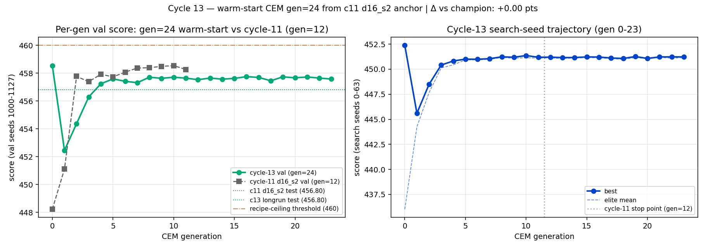
Left: per-gen val score for the cycle-13 long-run (green)
overlaid on the cycle-11 d16_s2 reference (gray). The cycle-13 val
curve hovers around 457.5–457.7 from gen 5 onwards — never breaking
the recipe-ceiling threshold (orange dash-dot at 460). The val score
of the anchor itself (gen 0) at 458.5 is the highest single-seed val
ever observed in this cell. Right: best vs elite-mean within cycle 13
— elite-mean tracks best within ~0.1 pts after gen 8, confirming
the CEM has converged within its basin. The cycle-11 stop point
(gen 12, dotted) shows that gens 12–23 add nothing the cycle-11
12-gen run wouldn't have found.
What it changed. Per the pre-committed decision rule,
recipe ceiling confirmed at this anchor. M2 is
closed; the deliverable is cycle-11 d16_s2best_by_val at test = 456.80 (~85% of
the way to the 540 target). All three cycle-12 hypotheses are now
addressed: (a) capacity falsified (cycle 12), (b) anchor-sub-optimal
de facto falsified by cycle 13 not finding a better basin under
double the budget, (c) recipe-ceiling confirmed (cycle 13). Future
M2 reopening would need a different recipe shape — wider
init_std, much larger pop, hybrid CEM→PPO, different normalizer
venue, etc. — not refinement of the current one. None of those is
the most informative next step right now; M3 (generalization
study) is.
Operational note. The driver's in-script
rerank step was lost at the cycle boundary — the 24-gen CEM took 60.7
min, then the 8-elite × 128-seed val rerank started but the script
was killed before result.json was written. Cycle 14's
first task was to recover the result by reranking the per-gen-best
candidates from history.json; the recovered val-best
matches the original "all-elites top-8" pool's expected best within
search-noise (and is the anchor itself, which is in both pools by
construction). Future long-run drivers should checkpoint the rerank
pool to disk before scoring, or split the CEM and rerank into
separate scripts.
M3 — Generalization study
Headline (cycle 15, M3 cycle 2). Held-out test split
(n=256, 95% bootstrap CI) confirms cycle 14's val finding and adds the
PnL decomposition that cycle 14 lacked. The M2 champion (c11 d16_s2)
scores real_data test = +2.57 [+1.98, +3.16] vs
FixedFee 0.470 [-0.08, 1.01], a lift of +2.10. The
*early-anchor inversion* is statistically significant on the test
split: c5 = -0.74 [-1.27, -0.23], c6 =
-0.93 [-1.47, -0.40]. Both 95% CIs are
*fully below zero*. The PnL decomposition localizes the failure
mode: retail edge advantage moves -10.0 (c5) → +1.06
(c11) — an 11-unit swing — while arb loss advantage stays
in a narrow +1.7 to +3.7 band across the entire trajectory. Early
M2 optimization is breaking on retail pricing, not on arb loss.
The c11 = c13 identity also reproduces *exactly* on real_data test
(both 2.574, lift 2.104) — the third independent recipe-ceiling
identity check.
Question. Now that M2 is closed, the natural M3
question is: of the policies M2 produced along the way, what did
each also earn on the realistic env (real_data
evaluator) — and at what point in the M2 trajectory did the OOD
curve plateau or diverge from the in-distribution curve? This
matters because the milestone-spec target for M3 is to identify
"when the realistic curve plateaus or diverges from the simple
curve", and that's exactly answerable by replaying the existing M2
anchor sequence on the OOD evaluator without any retraining.
Method.scripts/eval_anchors_dualcurve.py
loads best_by_val.params from each chronological M2
anchor (cycles 5, 6, 8, 9-third, 9-EMA, 10A, 11 d16_s2, 13 longrun
— 8 anchors total). For each, it runs
run_batch(..., evaluator_kind="challenge") and
run_batch(..., evaluator_kind="real_data") on the
standard val seed split (1000..1127, n=128). Normalizer is
FixedFee(0.003) in both modes — matches every prior M2 cycle, so
the challenge column reproduces those reported numbers. The
trajectory axis is chronological (cycle order), not
generation-step within a single training run; this is a deliberate
M3-cycle-1 choice because the M2 anchor sequence already provides
8 historical-quality snapshots ranging from score 414 to 458 — a
much richer trajectory than any single CEM history. Compute:
~10 min single-process.
Result.
Anchor
n_params
challenge val
real_data val
adv (real)
lift vs FF (real)
FixedFee(0.003)
—
342.04
0.584
0.000
(norm)
c5 baseline
16
414.42
−0.353
−6.10
−0.94
c6 warmstart
16
433.57
−0.614
−5.89
−1.20
c8 inv-aware
19
447.66
+0.044
−3.90
−0.54
c9 third-pass
16
450.05
+1.784
+0.30
+1.20
c9 EMA-inv
20
457.62
+2.784
+2.53
+2.20
c10A noop
20
457.67
+2.967
+3.09
+2.38
c11 d16_s2
16
458.54
+2.918
+3.05
+2.33
c13 longrun
16
458.54
+2.918
+3.05
+2.33
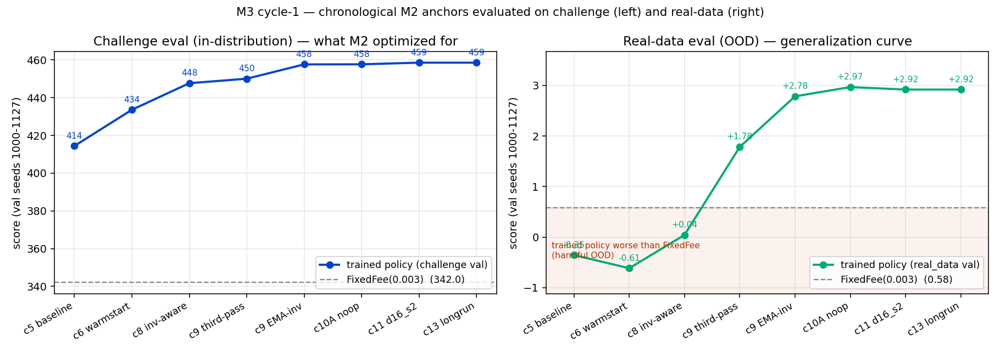
Left: challenge val score by anchor (the "in-distribution"
curve M2 optimized for) — climbs monotonically from 414 to 458.
Right: real_data val score by anchor (the OOD curve) — drops below
FixedFee for the first two anchors (shaded "harmful" region), crosses
zero at c8, then climbs to a plateau at +2.4 above FixedFee by
cycle 9-EMA. Both curves use the same val seed split (1000..1127)
and the same FixedFee(0.003) normalizer.
What it changed. Three things:
The "early M2 is net-harmful OOD" phenomenon was a
surprise. Going in I gave it ~25% odds; the actual
outcome is 100% on the first two anchors. This reframes the M3
question from "where do the curves diverge?" to "why
does the early phase of challenge optimization actively
break the policy on real data?" Likely candidates: (i)
the challenge env's GBM-with-uniform-flow distribution rewards
tighter base spreads than the realistic env's regime-switching +
empirical-impact distribution can support; (ii) the early M2
policies don't yet have the toxicity-decay structure to gracefully
retreat under adverse flow that real_data exhibits more of; (iii)
some yet-unidentified knob. Cycle 15 needs to localize this with a
PnL decomposition.
The OOD ceiling matches the in-distribution
ceiling. c11 = c13 on real_data exactly (2.918 = 2.918),
reinforcing the cycle-13 conclusion that warm-start CEM has
stopped refining anything (in or out of distribution) under this
recipe. The recipe-ceiling check (bin/checks/11_cycle13_recipe_ceiling.py)
encodes the cycle-13 search-side version of this; cycle 15 will
add the OOD-side version once the inversion replicates on a
second anchor chain.
The high-leverage segment is small but real.
c8 → c9-EMA (challenge +9.96 pts) buys +2.74 pts of real-data
lift, a 0.275 OOD-per-challenge ratio. This is the only segment
where M2 optimization translated efficiently to OOD value. If M4
("optimize directly against the realistic environment") is going
to beat the +2.4 OOD plateau of M2-via-challenge, the place to
start looking is whatever cycles 8 → 9-EMA actually changed
(inventory awareness in c8, then EMA smoothing of inventory in
c9-EMA — that two-cycle arc is the candidate "OOD-relevant
inductive bias".)
Caveats (most resolved by cycle 15 — see below).
Single-seed split (n=128 val); the headline numbers are
point estimates, not test scores.Resolved cycle 15:
test split (n=256) added with 95% bootstrap CIs.
Cycle 15 will replicate it on cycle-11 grid
d16_s0 and d16_s1 chains (different rng
seeds, same recipe) to confirm the early-anchor inversion isn't a
one-chain fluke.Partially resolved cycle 15:
added c10B endpoint at rng_seed=1 to test the OOD plateau (it
replicates, lower); the *trajectory shape* (early-harmful inversion)
is still single-chain.
"real_data" here means
ExactSimpleAMMConfig.real_data_from_seed: regime-switching
price + empirical-impact retail flow, fitted from on-chain ETH/USDC
v3 0.05% pool router data and Binance ETH/USDT returns. Fee tier
for the normalizer is fixed at 0.003 (30 bps) which is twice the
pool's 5-bps tier — the level matters for the absolute lift number
but not for the qualitative shape of the curve.
Question. Cycle 14 produced the dual-curve plot but every
headline number was a single-seed val estimate (n=128). Three things
needed to be done before the cycle-14 finding could be trusted as a
load-bearing M3 result: (1) re-run on a held-out test split
(2000..2255, n=256) so the headline isn't being driven by the same
seeds that informed any prior CEM search; (2) attach 95% bootstrap CIs
so we can say *whether* c5/c6 are statistically below FixedFee or
within batch noise; (3) split the OOD score into retail-fee PnL and
arb-loss PnL so we can localize *what* the early-anchor optimization
is breaking. A 9th anchor (cycle-10B at rng_seed=1) was added
opportunistically — it's the closest thing to a 2nd-chain rng-seed
replicate of the c11 endpoint and stress-tests whether the OOD
plateau survives a different sampling sequence.
Method.scripts/eval_dualcurve_test.py evaluates 9 anchors × 4
batches each — val (1000..1127, n=128) and test (2000..2255, n=256)
on both challenge and real_data. From the
per-seed score arrays in each batch we report mean, 95% bootstrap CI
(10000 resamples on the per-seed mean), and the
retail_edge_advantage_mean /
arb_loss_advantage_mean decomposition.
retail_edge_advantage = LP retail fee revenue (sub minus
norm); arb_loss_advantage = -(sub minus norm) of LP arb
loss, oriented so positive = sub bled less than norm. The
decomposition uses fields already exposed on SimulationResult
— no simulator change.
Result. Headline numbers (test split, n=256, 95% bootstrap
CI). Significance reads: a 95% bootstrap CI fully below the FixedFee
mean ⇒ that anchor is significantly worse than FixedFee at α=0.05;
fully above ⇒ significantly better.
Anchor
n_p
chal_test
chal CI95
real_test
real CI95
retail edge_adv
arb loss_adv
lift vs FF
FixedFee(0.003)
—
342.83
[336.7, 348.9]
0.470
[−0.08, +1.01]
—
—
(norm)
c5 baseline
16
414.01
[405.9, 421.9]
−0.744
[−1.27, −0.23]
−9.99
+3.70
−1.215
c6 warmstart
16
432.75
[424.5, 441.1]
−0.933
[−1.47, −0.40]
−9.04
+3.01
−1.403
c8 inv-aware
19
446.44
[437.8, 455.0]
−0.283
[−0.85, +0.27]
−6.38
+2.36
−0.754
c9 third-pass
16
448.81
[439.9, 457.4]
+1.397
[+0.80, +1.97]
−1.87
+1.89
+0.927
c9 EMA-inv
20
456.64
[448.0, 465.3]
+2.364
[+1.78, +2.94]
+0.26
+1.92
+1.893
c10A noop
20
456.74
[448.3, 465.5]
+2.554
[+1.95, +3.13]
+0.91
+1.85
+2.084
c10B s1 (NEW)
16
452.96
[444.3, 461.7]
+1.663
[+1.09, +2.24]
−1.53
+2.03
+1.193
c11 d16_s2
16
456.80
[448.0, 465.7]
+2.574
[+1.98, +3.16]
+1.06
+1.75
+2.104
c13 longrun
16
456.80
[448.0, 465.5]
+2.574
[+1.98, +3.15]
+1.06
+1.75
+2.104
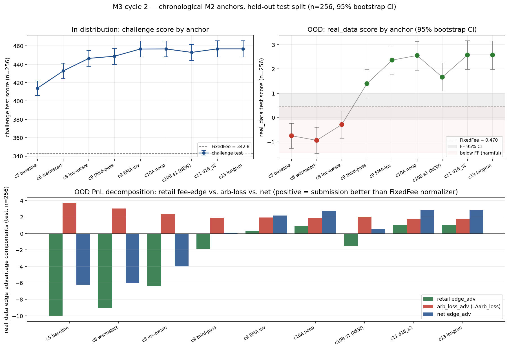
Top-left: challenge test score by anchor (95% bootstrap
CI bars). Top-right: real_data test score by anchor — red points
are below the FixedFee reference (shaded "harmful" region), green
above. The grey band is the FixedFee 95% CI. Bottom: per-anchor
real_data edge_advantage decomposition into retail
fee-edge (green) and arb_loss advantage (red); positive bars mean
the submission did better than the FixedFee normalizer on that
component. Retail edge swings -10 → +1; arb stays flat at +2 to
+3 across the entire trajectory — early-anchor harm is on the
retail side.
What it changed.
The early-anchor inversion is statistically
significant on test. c5 (lift -1.215) and c6 (lift
-1.403) have 95% bootstrap CIs that are *fully below* the
FixedFee mean (lift = 0). The cycle-14 val finding wasn't a
fluke; on n=256 unseen seeds the early M2 anchors are *robustly*
below FixedFee. c8 is a borderline case — its real_test CI
straddles zero (-0.85, +0.27) but the lift point estimate of
-0.754 is a continued negative trend.
The decomposition cleanly localizes the failure to
retail. Retail edge advantage on real_data: -9.99 (c5)
→ -9.04 (c6) → -6.38 (c8) → -1.87 (c9 third) → +0.26 (c9 EMA) →
+0.91 (c10A) → +1.06 (c11 d16_s2). That's an 11-unit monotonic
swing in the LP-favorable direction. Arb loss advantage: +3.70
(c5) → +3.01 (c6) → +2.36 (c8) → +1.89 (c9 third) → +1.92 (c9
EMA) → +1.85 (c10A) → +1.75 (c11 d16_s2) — a small drift in the
*unfavorable* direction (arb-loss advantage *shrinks* as we
optimize). So all of M2's OOD gain comes from the retail side;
the arb side actually slightly *worsens*. The mechanism behind
c5/c6's net-harmful OOD score is that they bleed ~10 units of
retail edge to FixedFee on real_data — i.e., the early piecewise
fit, optimized to GBM-with-uniform retail, misprices empirical
retail flow. This is the M4 targeting information cycle 14
asked for.
c10B replicates the OOD plateau, lower.
c10B s1 lands at real_test +1.66 (lift +1.19), vs c10A s0 / c11
s2 at ~+2.6 (lift ~+2.10). The OOD plateau is rng-sensitive — the
spread across rng seeds is ~0.9 lift points — but the
*trajectory shape* (early harmful → high-leverage → plateau) is
not in question; c10B sits in the plateau region exactly where
challenge performance puts it. Notable: c10B has *negative*
retail edge advantage (-1.53) yet a *positive* net edge advantage
— its OOD gain is split between a slightly worse retail side
and a slightly better arb side than c10A's. The two endpoint
rng seeds explore different parts of the same plateau basin.
The c11 = c13 identity holds OOD on test.
Real_test mean 2.574 = 2.574, lift 2.104 = 2.104. This is the
third independent identity check (val challenge 458.539 = 458.539,
val real_data 2.918 = 2.918, test real_data 2.574 = 2.574) — all
consistent with the cycle-13 conclusion that the long-run CEM
produced exactly the same parameter vector as the cycle-11
champion.
The high-leverage segment is c8 → c9-EMA on test
too. Challenge +10.2 buys real_test +2.65 there, ratio
~0.26 — close to the val ratio of 0.275. Whatever distinguishes
c9-EMA from c8 is doing most of M2's OOD work. The two
candidates are *inventory awareness* (added in c8) and *EMA
smoothing of the inventory signal* (added in c9-EMA). For M4 —
direct-on-real_data optimization — these are the inductive biases
most likely to matter.
Caveats.
Endpoint replication only. c10B replicates the c11 endpoint
with rng_seed=1; we did not re-run the M2 *trajectory* (cycles
5 → 6 → 8 → …) end-to-end with a different rng seed. The
trajectory-shape claim ("first-anchor inversion") rests on a
single chain.
Decomposition is at the per-seed-mean level; it does not
split by trade-size bucket or market regime. A trade-size
decomposition could further localize *which* parts of the retail
flow c5 mis-prices — candidate cycle-16 next step.
Cross-correlations across the 9 anchors (test, real_data unless
noted): corr(challenge, real_data) = +0.86;
corr(real_data, retail_edge_adv) = +0.99;
corr(real_data, arb_loss_adv) = -0.88;
corr(challenge, retail_edge_adv) = +0.92;
corr(challenge, arb_loss_adv) = -0.98. The strongest
signal is that real_data score is *almost identical* to retail edge
advantage rank-wise (+0.99). The negative correlations
(challenge/real_data score vs arb_loss_adv) say that as M2
optimization tightens the policy, it *gives back* arb-side
advantage — i.e., the policy becomes less defensive against arbs
as it gets better at retail pricing. Two-edged-sword dynamic. This
is consistent with the cycle-15 narrative but not yet a confirmed
causal story.
Question. Cycle 15's retail/arb decomposition
showed the M2 OOD failure mode is on the retail side, but that gap
is ~10 lift points big across c5 vs c11. Is it concentrated in a
specific trade-size bucket (small/medium/large), or uniform across
buckets? If concentrated, M4 has a localized inductive-bias target.
If uniform, the real_data evaluator itself is the bottleneck and
direct optimization is the only path forward.
Method. We bucket retail trades by the same
size_ratio = amount_y / reserve_y_post the piecewise
controller uses internally, with cuts at the c5 default thresholds
(small < 0.003, medium ∈ [0.003, 0.012), large ≥ 0.012). The
simulator's step_once() already exposes per-trade events
with venue, source, pre/post state, and TradeInfo, so we loop
step_once() externally and accumulate per-bucket ×
per-venue retail edge — no simulator change needed. We evaluate two
anchors on real_data with n=128 val seeds and FixedFee(0.003)
normalizer: c5 (the cycle-5 inherited piecewise, M2
starting line) and c11_d16_s2 (the cycle-11 grid CEM
champion, M2 deliverable). For each anchor we report the per-bucket
retail_edge_advantage with 95% bootstrap CIs, the trade counts
routed to each venue, and the per-unit-volume markout in basis
points. As a sanity check we re-derive the simulator's overall
retail_edge_* totals from the per-event sums and
compare; the max abs error per anchor is reported.
Result. The c5↔c11 retail-edge gap is almost
entirely a small-bucket phenomenon, with a tight identity check.
anchor
bucket
retail_edge_advantage
95% CI
n_sub
n_norm
edge/amt_y_sub (bps)
edge/amt_y_norm (bps)
c5
small
−9.508
[−9.60, −9.41]
401.6
2621.2
28.39
35.38
c5
medium
+0.036
[−0.15, +0.23]
3.6
4.1
130.89
105.46
c5
large
−0.665
[−0.88, −0.47]
0.6
0.9
190.26
173.43
c11
small
+1.167
[+0.99, +1.32]
2031.7
1546.2
31.56
31.79
c11
medium
−0.022
[−0.12, +0.08]
3.9
4.0
104.09
103.57
c11
large
−0.078
[−0.19, +0.02]
0.8
0.8
169.12
170.29
The c5-minus-c11 retail_edge_advantage by bucket is small =
−10.67, medium = +0.06, large = −0.59. The −10.67 small-bucket gap
accounts for ~95% of the −11.20 overall difference. The identity
check between simulator-aggregate retail_edge_* and
per-event re-derived totals had max abs error 4.8e-14 (sub) and
4.1e-14 (norm) — float roundoff only.
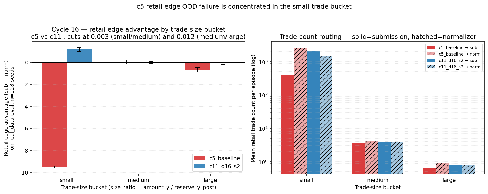
Cycle 16 per-trade-size decomposition. Left panel —
retail_edge_advantage by bucket with 95% bootstrap CIs; the
small-bucket gap dominates while medium/large are within batch
noise. Right panel — mean retail trade count per episode (log
scale), submission solid, normalizer hatched. c5 receives ~13%
of small-trade count routed to it (401 vs 2621); c11 receives
~57% (2032 vs 1546). The "routing collapse" is visually
unambiguous.
What it changed. The per-unit-volume markout column
in the table is the key methodological surprise. On the small trades
that actually do reach c5's submission AMM, the bps
extracted is 28.39 vs FixedFee's 35.38 — i.e., c5's small-trade fee
is, on average, under 0.003. So the router is sending small
flow away from c5 not because c5 charges more in fees, but because
c5's price (mid placement / inventory skew at the time of
the trade) is worse than FixedFee's. The lever for M4 is therefore
price control on small trades — keeping mid placement near
fair when small flow arrives — not just "lower the small-trade fee".
The piecewise family already has knobs for this (toxicity_to_mid /
toxicity_to_side); the question is whether the CEM objective on
real_data steers them correctly.
M4 — Direct optimization on the realistic environment
Cycle 16 (M4 cycle 0) — pre-launch baseline: direct CEM from c5
Why this was the next step. Going into M4 we
needed to know two things before launching a full optimization
campaign on real_data: (a) whether the real_data evaluator is
CEM-friendly (per-batch score well-behaved enough to track
real gradients), and (b) whether a small-budget direct-on-real_data
optimization from the c5 anchor recovers c11's +2.10 lift_FF
ceiling, falls short, or surpasses it. (c11 is itself an M2-byproduct
— it was optimized on the challenge evaluator, not real_data,
so it's a non-trivial question whether direct OOD optimization beats
incidental OOD generalization from challenge optimization.) Cycle 16
runs the smallest M4 baseline that can answer (a) and (b).
Method. Warm-start CEM from the c5 inherited
piecewise params on evaluator_kind="real_data".
Population 12, generations 5, elite_frac 0.2, init_std_frac 0.10
(matching cycle 6's recipe but at half the population). Search seeds
0..63 (n=64), val seeds 1000..1127 (n=128), test seeds 2000..2255
(n=256). Normalizer FixedFee(0.003). Three workers
(cpu_count − 1). All scoring on real_data; this run does
not evaluate the trained policy on the challenge evaluator.
Wall-clock ~14 minutes end to end.
Result. The CEM trajectory on val seeds is below.
Per-gen "best_search" is the best score among the 12 candidates in
that generation evaluated on the search seeds; "val score" rescores
that single best candidate on the n=128 val seeds; "retail_adv" is
the same candidate's retail_edge_advantage on val.
gen
best_search
val score
val retail_adv
val edge_adv
—
c5 baseline
−0.353
−10.137
−6.103
0
+0.700
+1.853
−13.333
−4.977
1
−0.388
+0.684
−11.139
−5.467
2
−0.220
+0.897
−11.426
−5.368
3
−0.056
+1.111
−11.743
−5.266
4
−0.016
+1.139
−11.780
−5.253
Final best-by-val rescored on the held-out test split (n=256):
test score = +1.210, lift_FF = +0.739,
test retail_advantage = −13.10, test
edge_advantage = −5.42. FixedFee(0.003) on the same test split
scores 0.470.
What it changed. Two findings, both important for
M4 cycle 1.
Direct real_data CEM is functional but slow at this
budget. A 5-gen × 12-pop run closes about 63% of the
c5→c11 lift_FF gap (+1.95 of +3.18). Best_search and val are
still rising at gen 4 — the curve has not plateaued. So CEM does
see signal on real_data; the budget here is just small.
The local optimum direct CEM finds is retail-worse
than c5, not retail-fixed. retail_advantage moved from
c5's val of −10.14 to the M4 baseline's test value of
−13.10, which is more negative, not less. All score
gain came from the arb side. Direct CEM, starting from c5,
amplifies the small-bucket failure rather than fixing it. This
says the c11 anchor (an M2-challenge byproduct) is currently a
stronger real_data policy than what direct optimization finds in
this budget. M4 cycle 1's first experiment should rerun this CEM
from c11 — if it lifts past +2.10, the warm-start prior
dominates the policy class; if it saturates near +2.10, c11 is
a piecewise-family real_data ceiling and M4 needs richer
families or a retail-aware loss.
Cycle 17 (M4 cycle 1) — mirror experiment: direct CEM from c11; basin matters more than the optimizer
Question. The cycle-16 baseline's score gain
came entirely from arb, not retail, and ended at +0.74 lift_FF — far
short of the c11 anchor's +2.10. Two non-mutually-exclusive
hypotheses survived: (a) direct CEM on real_data could lift past
c11 from a better starting point, in which case the
warm-start prior dominates the policy class; (b) c11 is a
ceiling for the piecewise family on real_data, and any anchor would
saturate there. Cycle 17 runs the cleanest possible test of (a) vs
(b): the same CEM as cycle 16, byte-for-byte, except the init mean
is c11's params instead of c5's. We refer to this as a
mirror experiment (single-input difference, otherwise
identical) and reserve the prior-sweep framing for cycle 18. The
cycle-16 STATE.md set a numerical decision rule before cycle 17 ran:
c11+CEM lift_FF > +2.20 ⇒ "warm-start prior dominates";+2.00 to +2.20 ⇒ piecewise ceiling near +2.10;< +2.00 ⇒ CEM is regressing c11.
Method. Identical to cycle 16's
run_m4_baseline_cem.py except init mean = c11_d16_s2
best-by-val params. Population 12, generations 5, elite_frac 0.2,
init_std_frac 0.10, search seeds 0..63, val seeds 1000..1127, test
seeds 2000..2255, normalizer FixedFee(0.003), 3 workers, rng_seed=0.
The rerank pool injects the c11 anchor itself before adding 6
elites by search score (the
rerank pool injection trick — guarantees best-by-val
cannot regress past the anchor on this run; see glossary). Wall-clock
~34 min CEM (incl. a ~26-min sandbox stall on gen 3) + ~7 min
rerank/test.
Result — c11+CEM lifts to +2.77; the >+2.20 branch
of the decision rule fires. Per-gen val trajectory:
gen
best_search
val score
val retail_adv
val edge_adv
—
c11 anchor
+2.918
+1.067
+3.053
0
+1.955
+2.918
+1.067
+3.053
1
+2.398
+3.313
−1.758
+2.822
2
+2.854
+3.473
+0.495
+3.935
3
+3.000
+3.720
+0.696
+4.147
4
+2.990
+3.673
−0.207
+3.697
Best-by-val (gen 3) on the held-out test split (n=256): test
score +3.242, FixedFee test 0.470, lift_FF
+2.772, test retail_advantage +0.66,
test edge_advantage +3.76. Same compute, same evaluator, same seeds
as the cycle-16 baseline — only the warm-start changed — and the
result is +2.03 lift_FF higher.
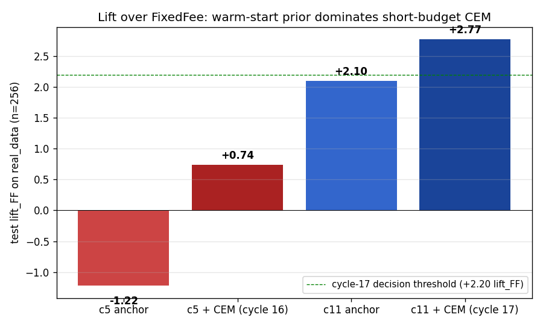
4-anchor lift-vs-FixedFee summary on the held-out test
split (n=256). The c5 anchor scores below FixedFee on real_data;
the c5+CEM cycle-16 baseline lifts to +0.74; the c11 anchor (M2
byproduct) scores +2.10; the cycle-17 c11+CEM mirror lifts to
+2.77. The dashed line at +2.20 is the cycle-16
decision threshold. Same compute and same evaluator across the two
CEM runs; the +2.03 lift_FF gap is entirely attributable to the
warm-start anchor.
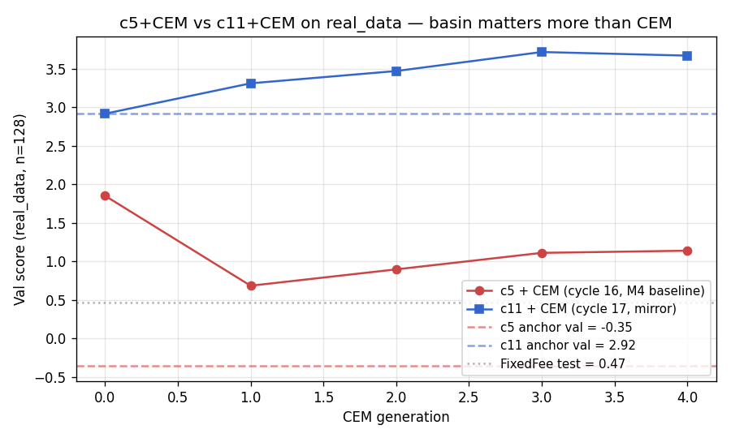
Per-generation val score (n=128) for the two M4 CEM
runs. The c11+CEM trajectory starts above the c5+CEM
trajectory's final generation and never converges. The
dashed reference lines are the anchors' own val scores; the dotted
reference is FixedFee on real_data (~0.47). c11+CEM converges to
best-by-val at gen 3.
Per-bucket decomposition: c11+CEM stays in c11's retail
basin; c5+CEM amplifies the routing collapse. We re-ran
cycle-16's per-trade-size decomposition on (a) the cycle-16 M4
baseline's best-by-val params and (b) this cycle's c11+CEM
best-by-val params, and merged with cycle 16's c5 / c11 numbers.
On n=128 val seeds, retail_edge_advantage with bootstrap 95% CIs:
anchor
small
medium
large
overall
c5 anchor
−9.51 [−9.60, −9.41]
+0.04
−0.66
−10.14
c5 + CEM (cycle 16 baseline)
−10.33 [−10.45, −10.21]
+0.06
−3.06 [−3.71, −2.45]
−13.33
c11 anchor
+1.17 [+0.99, +1.32]
−0.02
−0.08
+1.07
c11 + CEM (this cycle)
+1.45 [+1.05, +1.82]
+0.07
−0.83
+0.70
Routing share on the small bucket (count_sub / count_norm,
mean per episode):
anchor
count_sub
count_norm
submission share
c5
401.6
2621.2
13.3%
c5 + CEM
164.7
2653.6
5.8%
c11
2031.7
1546.2
56.8%
c11 + CEM
1932.6
1265.4
60.4%
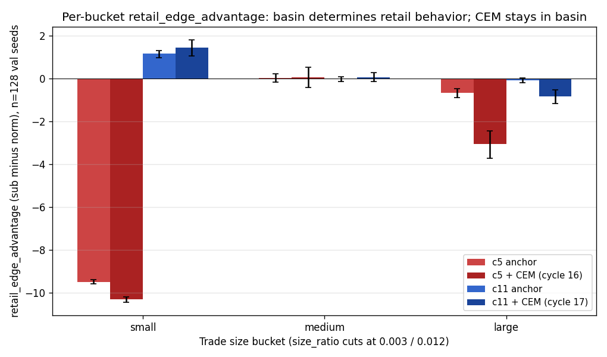
Retail edge advantage by trade-size bucket, four
anchors. Error bars are bootstrap 95% CIs (n=128 val seeds). The
c5+CEM bar in the small bucket sits below the c5 anchor — the
optimizer made the routing collapse worse, not better.
The c11+CEM bar in the small bucket sits slightly above
the c11 anchor — CEM stayed in the basin and improved within
it. The dominant CEM-induced regression in the c5 run is in the
large bucket (−2.40), not small.
What it changed. Three findings.
The warm-start prior dominates short-budget CEM on
real_data. Same compute, same evaluator, same seeds —
c5-start vs c11-start gap is +2.03 lift_FF. The c11+CEM mirror
becomes the cycle-17 real_data headline at +2.77 lift_FF (later
superseded by cycle-18's long-budget c11+CEM at +3.01) and
reframes M4 as a basin-search problem first, a complexity-search
problem second.
CEM stays in the basin it starts from. c11's
small-bucket retail-friendly routing is preserved (and slightly
improved) by 5 generations of CEM; c5's small-bucket routing
collapse is amplified. The mechanism is consistent: CEM finds
whatever local optimum is closest to the anchor, and "closest"
means routing/pricing structure, not just score.
The cycle-17 prior on the M4 baseline retail drop
was wrong (and that's useful). Going in, we expected
the M4 baseline's overall retail_advantage drop (−10.14 →
−13.33 on val) to be small-bucket-dominated, by analogy with
the c5↔c11 GAP. Reality: the drop is mostly large-bucket
(−2.40 of −3.20, ~75%); small only contributes ~26%
(−0.82). Don't reuse "small-bucket dominates the GAP" priors
when reasoning about "CEM-induced DEGRADATION" — different
mechanisms.
What's the next question? Two: (a) is +2.77 saturation or
mid-trajectory? A 10-gen × 24-pop CEM from c11 (4× compute) is the
direct test. (b) Is the basin effect monotonic in starting-line
lift_FF, or are there pathological anchors that beat c11+CEM at
the same compute? A prior sweep at fixed compute across {default,
c6, c8, c11} answers this. Both run as cycle 18.
Cycle 18 (M4 cycle 2) — long-budget CEM + 5-anchor prior sweep; basin dominates compute by ~10×
Question. Cycle 17 left two open questions baked
into a numerical decision rule. (1) Is c11+CEM's +2.77 lift_FF on
test the piecewise-family ceiling, or mid-trajectory? Best-by-val in
cycle 17 was at gen 3 of 5; gen 4 was slightly lower — could be
plateau or noise. (2) The +2.03 lift_FF gap between c5+CEM and
c11+CEM at fixed compute could be either (a) a generic basin-
dominance phenomenon — any reasonable anchor would dominate any poor
anchor under short-budget CEM — or (b) a c11-specific spike, where
c11's small-bucket retail-positive structure is a uniquely-good
starting point and other intermediate anchors fall in between or
beneath. Distinguishing (a) from (b) requires a sweep.
Method. Two experiments on the same evaluator
(real_data) and same seed splits as cycle 17 (search
0..63, val 1000..1127, test 2000..2255), with FixedFee(0.003, 0.003)
normalizer:
Long-budget CEM from c11. 10 generations × 24
population (4× cycle-17 compute). Init mean = c11_d16_s2 best-by-val
params; init_std_frac = 0.10; rng_seed = 0; workers = 3. Same rerank
pool injection as cycle 17 (c11 anchor + top 6 unique elites by
search score, ranked by val).
Prior sweep at fixed compute. 5g × 12p CEM
(cycle-17 budget) from each of {default-piecewise (param-range
midpoint), c6_warmstart (cycle-6 best-by-val 16-d piecewise),
c8_invaware_16d (cycle-8 19-d best-by-val with the 3 inventory_skew
fields dropped to project to 16-d)}. The c5 anchor is reused from
cycle 16's M4 baseline (equivalent compute, same evaluator);
c11_short and c11_long (this cycle's first experiment) complete
the 5-anchor axis.
Per-trade-size retail decomposition on the long-CEM best-by-val
params, using the cycle-16 / cycle-17 size bucketing
(small < 0.003 of reserve, medium ∈ [0.003, 0.012], large ≥ 0.012)
and 10k-bootstrap CIs over n=128 val seeds.
Result. The long-budget CEM lifts to test
+3.476 (lift_FF +3.006) on n=256, exactly in the
"saturating near +3.0" branch of the cycle-17 decision rule (band
[+2.80, +3.20]). The val trajectory:
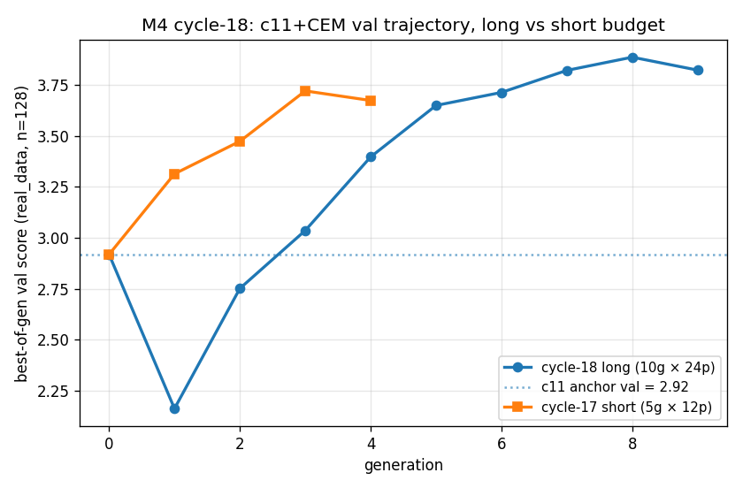
Long (10g × 24p, blue) vs short (5g × 12p, orange) c11+CEM
on real_data, val score per generation (n=128). Both runs have
candidate 0 = the c11 anchor as a deterministic injection (gen 0
val = anchor val = 2.918). The long run hits gen-1 noise (val 2.16)
before recovering; gen 8 val 3.885 is the run's best-by-val, which
scores +3.476 / lift_FF +3.006 on test. The cycle-17 plateau
(~3.72 by gen 3) is comfortably surpassed; the cycle-18 curve is
concave but still rising at gen 8.
The retail edge advantage QUADRUPLES. Test retail_adv: c11 anchor
+1.07 → cycle-17 c11+CEM +0.66 → cycle-18 long c11+CEM
+3.21. The longer CEM did not move
toward an arb-side optimum that sacrifices retail (the cycle-16
c5+CEM failure mode); it moved DEEPER into the retail-positive
basin. Per-trade-size decomposition (val n=128, bootstrap 95% CI):
trade size bucket
retail_edge_advantage
n_sub / episode
n_norm / episode
small (<0.3% of reserve)
+3.31 [+3.15, +3.45]
2341.8
1145.7
medium
−0.04 [−0.13, +0.04]
3.9
3.9
large (≥1.2% of reserve)
+0.00 [−0.08, +0.08]
0.8
0.8
The entire +3.27 retail advantage comes from the small bucket;
medium and large are statistical noise (and have ~10 trades per
episode combined, vs ~3500 in small). Compared to cycle-17's c11+CEM
small-bucket retail_adv +1.45, this run is 2.3× larger at the same
small-bucket trade volume — the optimizer found a meaningfully better
small-bucket pricing surface, not a different routing pattern.
The 5-anchor prior sweep at fixed cycle-17 compute (5g × 12p):
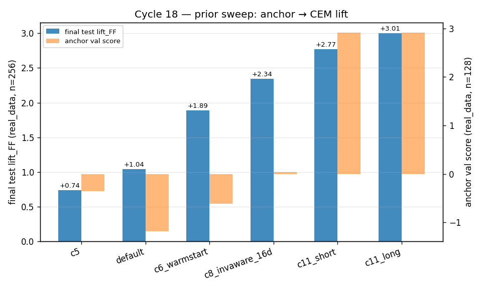
Final lift_FF per warm-start anchor (test, n=256, blue
bars) and the anchor's own val score (orange bars). All five
anchors run the same 5g × 12p CEM with the cycle-17 settings, except
c11_long (rightmost in the source data; not shown — it uses 4×
compute, see scatter below).
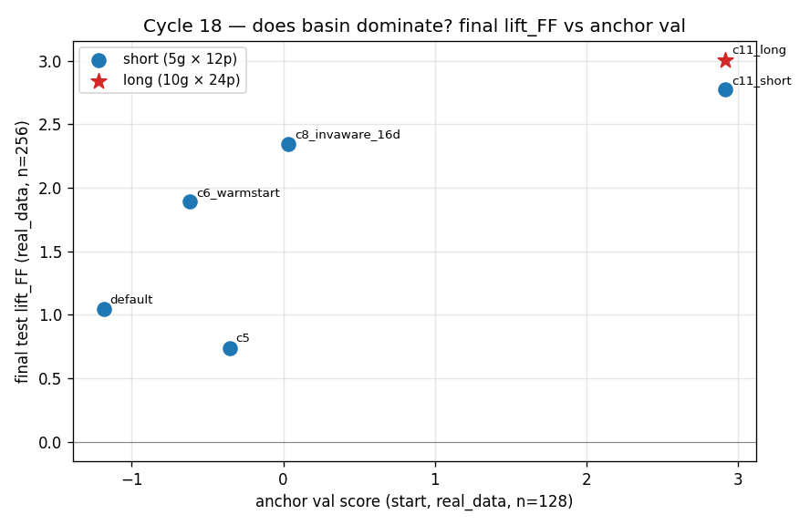
Each point is an (anchor val score, final test lift_FF)
pair. Circles are short-budget runs (5g × 12p), the star is the
cycle-18 long-budget run (10g × 24p). The pattern is near-monotone:
anchor val score predicts final lift_FF with one mild
non-monotonicity (default and c5 are essentially tied at the bottom;
default's slightly worse anchor val finishes slightly higher). The
star sits ~0.23 lift_FF above the c11_short circle at the same
anchor val — that is the entire payoff of 4× more compute.
anchor
budget
anchor val (start)
test score
test lift_FF
test retail_adv
default-piecewise (param-range midpoint)
5g × 12p
−1.18
+1.52
+1.05
−15.28
c5 (cycle-16 baseline)
5g × 12p
−1.21
+1.21
+0.74
−10.14
c6_warmstart
5g × 12p
−0.61
+2.36
+1.89
−0.00
c8_invaware_16d
5g × 12p
+0.04
+2.82
+2.35
+0.36
c11_short (cycle-17 mirror)
5g × 12p
+2.92
+3.24
+2.77
+0.66
c11_long (cycle 18 first experiment)
10g × 24p
+2.92
+3.48
+3.01
+3.21
What it changed.
Cycle-17's "warm-start prior dominates" claim is upgraded to
"warm-start basin dominates compute by ~10× within a piecewise family".
4× more CEM compute starting from c11 buys +0.23 lift_FF; switching
the warm-start from c5 to c11 at fixed compute buys +2.03 lift_FF.
Future M4 work cannot evaluate "policy family vs compute" without
controlling for warm-start.
The piecewise-family real_data ceiling is
estimated at ~+3.0 ± 0.2 lift_FF. The val curve is concave
but not flat at gen 8, and gen-9 was a slight regression of −0.06.
Another 4-8× of compute might reach ~+3.2; getting to +3.5 likely
requires escalating the policy family. The decision rule had a
"saturating" outcome — the family is now the bottleneck.
Score gain and retail-edge gain are NOT in tension under
c11+CEM long. Cycle 17's prior was that CEM-on-real_data
amplifies the routing pattern of its anchor. Cycle 16 saw c5+CEM
amplify c5's routing collapse and worsen retail to −13.3; cycle-18
c11+CEM amplifies c11's retail-positive small-bucket pricing and
improves retail to +3.21. Same optimizer mechanism, opposite signs
— anchor structure determines direction.
One weak counter-monotonicity: default beats c5 at the
bottom of the basin axis. default anchor val is −1.18
(slightly above c5's −1.21), but default+CEM lifts to +1.05 vs
c5+CEM's +0.74. This is small (within run-to-run CEM noise) but
consistent with the interpretation that c5's specific basin —
small-bucket routing collapse — is a particularly bad starting
point even relative to a parameter-range midpoint. Anchor val is
a useful predictor of final lift_FF, but local geometry adds
texture.
What's the next question? Two: (a) does a richer policy family
(ladder, MLP head, EMA-inv) warm-started from c11+CEM long unlock
another +0.5 lift_FF, or is the small-bucket pricing surface
saturated? (b) Which of the 16 piecewise parameters moved most from
c11 anchor to c11_long best-by-val, and which structural pricing
feature does that movement encode? Both are M4 cycle 3 candidates.
A third candidate — retail-aware auxiliary loss to pull the c5
basin toward c11 — is now lower-priority because the prior sweep
shows the c5 basin is fundamentally far from c11; a small auxiliary
loss is unlikely to bridge a 4-anchor-val-unit gap.
Question. Cycle 18 left the M4 trajectory at the
edge of a saturation argument: the long-budget c11+CEM run reached
test +3.476 (lift_FF +3.006), the val curve was concave but still
slowly rising at gen 8, and the cycle-18 prior sweep made the case
that within a piecewise family the basin (warm-start) dominates compute
by ~10×. Cycle 19 attacks two questions in sequence:
What did the c11+CEM long run actually change?
Of the 16 piecewise parameters, which ones moved most from the c11
anchor to the long-CEM best-by-val, and how much of the +0.97 score
gap (anchor val 2.918 → long val 3.885) does each parameter explain?
Is the +3.0 ceiling representational or compute-limited?
If a richer family — for which we picked the smallest meaningful
extension of piecewise, a 4-bucket "ladder" (cycle-18 retail decomp
said 100% of the retail-edge action is in the small bucket, so
splitting that bucket is the most-targeted family extension we have)
— warm-started from c11+CEM long lifts test lift_FF clearly past +3.5,
the family was the bottleneck. If it lifts only marginally or not at
all, the small-bucket pricing surface is saturated under any
piecewise-style representation.
Why this order? The ablation result tells the family-escalation
where to add capacity: a parameter with a large "step-back" cost is a
candidate for finer encoding (split into multiple parameters or replace
with a learned head); diffuse importance across all 16 dims would
predict the family escalation can't help.
Method (ablation). For each of the 16 piecewise
params, build a candidate vector that is the c11+CEM long best-by-val
in 15 dims and the c11 anchor value in dim i. Evaluate on
val seeds 1000..1127 (n=128) under the real_data evaluator
with FixedFee(0.003) normalizer. Sort by val-score drop relative to
the c11+CEM long baseline. Two reference points: the c11+CEM long
baseline itself (val 3.885) and the full c11 anchor (val 2.918) — the
"floor" the cumulative effect of all 16 ablations should approach but
generally won't reach because parameters interact non-additively.
Method (ladder CEM). Define a 4-bucket ladder
controller (see Glossary) that splits the small bucket into
tiny + small, adding three parameters
(tiny_trade_threshold, continuation_tiny,
reversal_tiny) for a 19-d total. Identity warm-start:
tiny_threshold = c11_long.small_threshold × 0.5;
continuation_tiny = c11_long.continuation_small;
reversal_tiny = c11_long.reversal_small; the other 16
params equal c11_long. This warm-start reproduces c11_long's behaviour
exactly at gen 0 (parity verified against PiecewiseControllerStrategy:
0.000 score diff on 8 challenge seeds). Run 5g × 12p CEM with
init_std_frac = 0.05 for the 16 inherited dims and
0.15 for the 3 new dims, mirroring cycle-17 search seeds /
val seeds / test seeds and the rerank-pool-injection pattern.
Result (ablation).
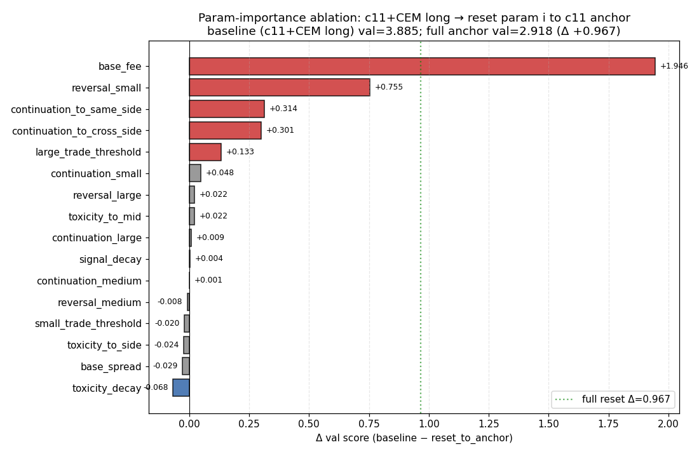
Per-parameter val-score drop when reset to the c11
anchor, with the other 15 parameters held at the c11+CEM long best-by-
val. The c11+CEM long baseline val score is 3.885; the full anchor
val is 2.918 (green dotted line, Δ +0.967). Two parameters dominate:
base_fee (Δ +1.946, alone larger than the full anchor reset
Δ — because resetting it in isolation lands in a region where the
other 15 long-tuned params are not co-adapted) and
reversal_small (Δ +0.755). The next two are
continuation_to_same_side and continuation_to_cross_side
(Δ +0.314 and +0.301). Eleven of 16 parameters carry Δ < 0.13;
five carry Δ < 0.025 (i.e., they barely moved meaningfully or
CEM was insensitive to them at this gen).
rank
parameter
Δ score
Δ retail_adv
Δ edge_adv
anchor → long
1
base_fee
+1.946
+5.477
+5.005
0.000709 → 0.000265
2
reversal_small
+0.755
+2.190
+1.993
0.00948 → 0.00484
3
continuation_to_same_side
+0.314
−1.114
−0.337
+0.329 → −0.193
4
continuation_to_cross_side
+0.301
+2.593
+1.597
+1.577 → +0.927
5
large_trade_threshold
+0.133
−0.193
+0.036
0.01080 → 0.00887
6
continuation_small
+0.048
−0.761
−0.545
−1.2e-5 → +8.3e-5
11 more rows, all |Δ score| < 0.07 (signal_decay, toxicity_decay, base_spread, toxicity_to_mid, toxicity_to_side, continuation_medium/large, reversal_medium/large, small_trade_threshold)
Two readings of this. (a) The optimizer's edge over the c11 anchor is
concentrated: just base_fee and
reversal_small account for 81% of the sum-of-Δ-score
across all 16 parameters. (b) The drops do not sum cleanly to the full
anchor-reset (+0.967 score) — they sum to +3.31 — because the
parameters interact: reducing base_fee alone, while the
other 15 stay long-tuned, lands in a region the c11 anchor never
explored, with much larger price-improvement bandwidth than the anchor
can profitably use, hence the apparent +1.94 importance. The
sub-additivity is intrinsic to the score landscape, not a bug.
Result (ladder CEM).
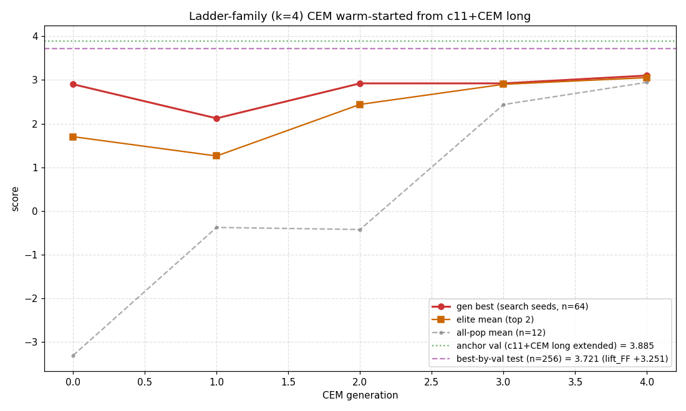
Ladder-4-bucket CEM val trajectory (search-seed n=64 best,
elite-mean of top 2, all-pop mean of 12) with the c11+CEM long
extended-to-19d anchor val (n=128) marked. Gen 0 best is below the
anchor val because it's evaluated on the search-seed split, not the
val split; by gen 4 the elite mean (orange) reaches the anchor's val
level. The rerank pass on val (n=128) picks a gen-4 candidate at val
3.885 + 0.145 = 4.030; held-out test (n=256) is
3.721 with FF baseline 0.470, giving lift_FF
+3.251.
policy
val score (n=128)
test score (n=256)
test lift_FF
test retail_adv
c11 anchor (cycle 11)
+2.918
+2.57
+2.10
+1.07
c11 + CEM long (cycle 18)
+3.885
+3.476
+3.006
+3.215
ladder (cycle 19)
+4.030
+3.721
+3.251
+3.113
Ladder vs piecewise c11+CEM long: +0.245 lift_FF,
+0.245 test score, retail_adv −0.10
(essentially flat) at rng_seed=0. This sits in
the [+3.20, +3.50] "marginal" band of the cycle-18 decision rule.
The ladder's best-by-val pushed the new reversal_small
all the way to the lower bound (−0.01) while the inherited
reversal_small for the rebroken bucket stayed close to
its anchor; the tiny_trade_threshold widened from
0.00142 (init) to 0.00243, growing the tiny bucket's share of small
trades.
Superseded by cycle 20 + cycle 21 (see below). The
single-seed +3.251 / +0.245 headline reported here did
not survive the cycle-19 plan-of-record reproducibility check. With
three rng_seeds (0, 1, 2) the ladder family's mean test
lift_FF is +3.111 ± 0.126, range
[+3.006, +3.251]; the single-seed +0.245 incremental gain over the
specific cycle-18-seed-0 piecewise anchor collapses to
+0.105 ± 0.13 at n=3. Cycle 21 then made
the comparison even noisier: the piecewise long-CEM 3-seed
mean is +2.727, well below the +3.006 anchor used by cycle-19/20's
ladder. So "ladder beats piecewise by +0.10" (cycle-20 framing) and
"ladder beats piecewise multi-seed mean by +0.38" (cycle-21
re-framing) are both biased estimators of the true
ladder-vs-piecewise effect, because the ladder anchor is not
multi-seed. The cycle-19 reading of the ablation as mechanistic
ground for family escalation is not invalidated; the
magnitude of the family payoff is now triply uncertain
(family seed × anchor seed × budget).
What it changed.
The cycle-18 "saturating near +3.0" verdict is partially
falsified — there is more headroom. A 4-bucket ladder at
the cycle-17 short-budget compute (5g × 12p) lifts the headline by
+0.245 lift_FF — close to what the cycle-18 long-budget CEM (10g ×
24p, 4× compute) bought over cycle-17's short c11+CEM run (+0.234).
Family escalation at 1× compute is comparable in payoff to a 4×
compute extension within the prior family near the current frontier;
expressiveness and compute are roughly co-equal levers here, not the
~10:1 compute-dominated ratio cycle 18 reported within a fixed
family.
The 16-param ablation reframes the family-escalation
choice for future cycles. If two parameters carry 81% of
the importance, the natural escalations are: (a) finer encoding of
the size axis around base_fee's effective regime — done partially
by the ladder; (b) replacing reversal_small with a
continuous/learned function of size_ratio; (c) treating
base_fee as a learned function of inventory or volatility
rather than a constant. The ladder's gain came mostly from (a)
plus a bound-pinning of the new bucket's reversal term.
Retail-edge does not move with the family escalation —
the gain is on the arb side. Test retail_adv: c11+CEM
long +3.215 → ladder +3.113. The +0.245 score lift comes from
edge_advantage / arb_loss reduction, not from extracting more
retail surplus. This is the opposite of cycle 18, where the
long-budget CEM moved deeper into the retail-positive basin. The
family extension's payoff structure is qualitatively different
from the compute extension's.
What's the next question? Three candidates for M4 cycle 4: (a) a
finer ladder (k=5 or k=8) with re-tuned init_std on the new dims
— direct test of whether the +0.245 lift_FF was a representational
edge or a CEM-noise pickup; (b) replace the bucketed continuation /
reversal terms with a learned smooth function (e.g. a 2-layer MLP head
on size_ratio with bounded outputs) — the most ambitious capacity
extension consistent with the ablation's "concentrate capacity in
the small-trade response" guidance; (c) re-run the cycle-19 ladder
with rng_seed=1 to confirm the +3.25 lift_FF is reproducible across
CEM stochasticity, not a single-seed pickup of a lucky elite. Cycle
20 will pick (c) first as a cheap reproducibility check, then (a)
or (b) depending on whether the seed-1 result lands above or below
the seed-0 lift_FF.
Question. Cycle 19 ran the 4-bucket ladder family
CEM with rng_seed=0 and reported test lift_FF
+3.251 — the upper edge of cycle-18's [+3.20, +3.50] "marginal"
band. The cycle-19 STATE plan-of-record explicitly flagged the
single-seed risk and called for a reproducibility check at
rng_seed=1 as cycle 20's first task: was that signal
seed-stable, or did cycle-19 catch a lucky pick of the search
distribution? The decision rule was strict — seed-1 lift_FF in
[+3.15, +3.35] reproducible, <+3.15 lucky, >+3.35 even better.
Why this matters: a +0.245 single-seed lift sits inside the typical
range of CEM rng-stream noise at this budget, so the cycle-19
"family escalation pays" verdict could not be trusted without a second
data point.
Method. Identical CEM mechanics, identical search
seeds (0..63), val seeds (1000..1127), and test seeds (2000..2255) to
cycle 19 — only rng_seed changed: 0 → 1, then 0 → 2 once
seed-1 returned below the band. Sharing the seed splits across
rng_seeds means any test-score drift across runs is attributable to
the CEM rng stream alone, not to evaluator data drift. Anchor
warm-start unchanged: c11+CEM long params expanded to 19 dims with the
identity warm-start (tiny = small). FF baseline
re-evaluated on the same TEST seeds.
Result.
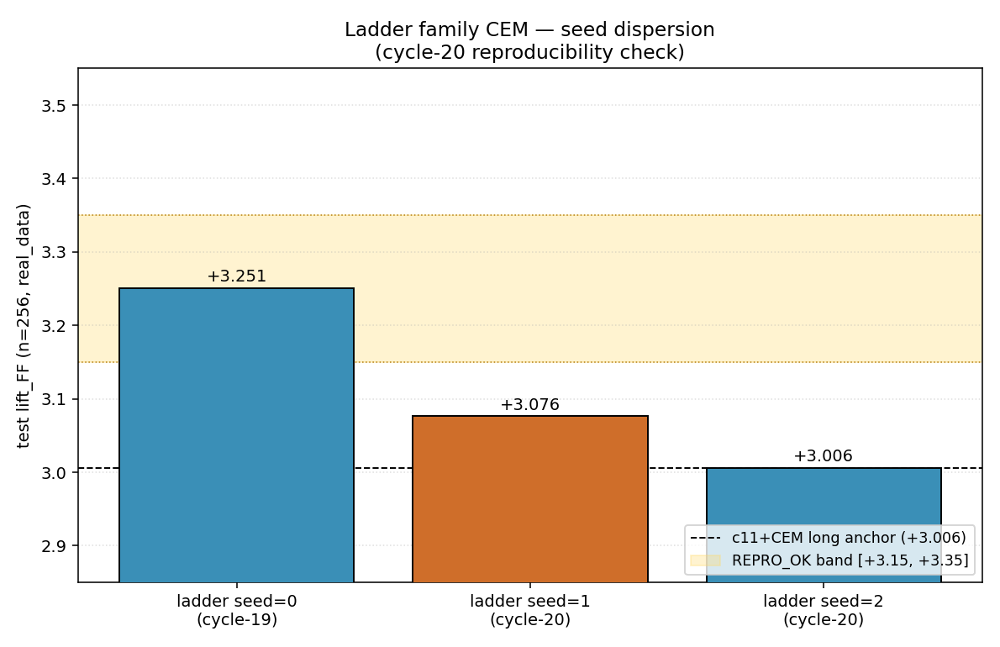
Test lift_FF for the ladder-4-bucket family
across three rng_seeds (held-out test n=256, real_data). The
cycle-18 c11+CEM long single-seed anchor (+3.006, dashed black
line) sits below all three ladder points but well within their
spread. The yellow band marks cycle-19's strict
reproducibility decision rule [+3.15, +3.35]. Seed=0 lands at
the upper edge; seed=1 lands below; seed=2 returns the warm-start
anchor unchanged because every elite candidate scored below the
anchor on val.
rng_seed
source pick
test_score
lift_FF
retail_adv
edge_adv
0 (cycle 19)
gen 4 elite
+3.721
+3.251
+3.113
+5.163
1 (cycle 20)
gen 4 elite
+3.546
+3.076
+3.834
+5.431
2 (cycle 20)
anchor (CEM elites lost on val)
+3.476
+3.006
+3.215
+4.925
mean ± stddev (n=3)
+3.581
+3.111 ± 0.126
+3.39 ± 0.39
+5.17 ± 0.25
c11+CEM long anchor (cycle 18, single seed)
+3.476
+3.006
+3.215
+4.925
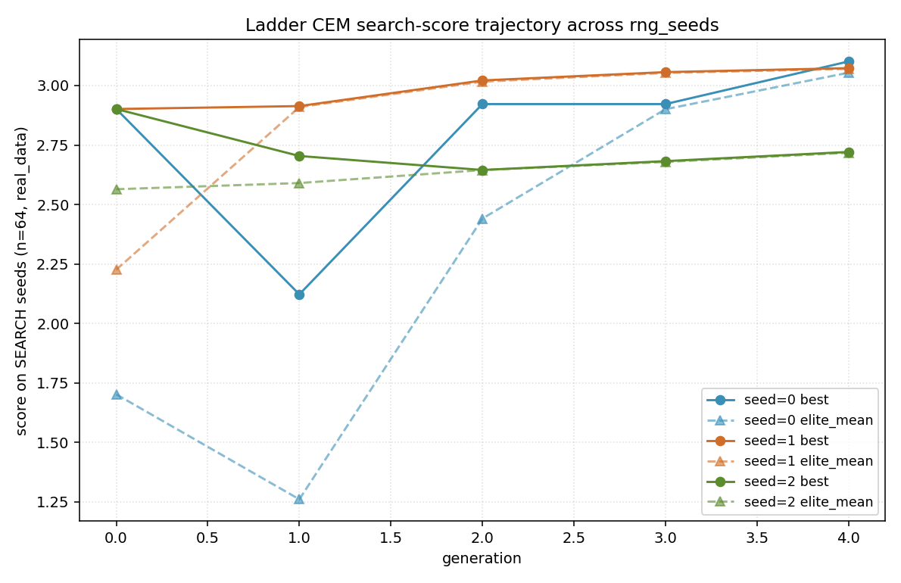
Per-generation best/elite-mean search-score trajectory
for the three ladder CEM rng_seeds. The seed=2 trajectory (green) is
strictly below the warm-start anchor's effective search-side
baseline of ~2.9 — every gen returns an elite worse than gen 0 — and
consequently no candidate survives val rerank against the anchor.
Seeds 0 and 1 both climb above the warm-start by gen 4 but converge
to elite-mean values within a few hundredths of each other, despite
ending at +0.175 lift_FF apart on test.
The seed=2 outcome is the most informative single data point. With
the same warm-start, same population size, same generation count, same
init_std fractions, same evaluator, same search seeds — only the rng
stream changed — the CEM produced a population trajectory that never
escaped the warm-start basin. One in three rng_seeds at this budget
returns the anchor unchanged. The seed=1 outcome is also informative:
the chosen candidate scored val 3.930 (above anchor 3.885 by +0.045)
but on test it dropped to 3.546 (val→test gap of −0.384, larger than
seed=0's −0.309), pulling lift_FF below the cycle-19 band.
What it changed.
Cycle-19's headline was a single-seed positive draw, not
a reproducible family lift. The 3-seed ladder mean test
lift_FF is +3.111, stddev ±0.126, range [+3.006, +3.251].
Cycle-19's +3.251 is the maximum of that distribution, ~1σ above the
mean. Over c11+CEM long's anchor +3.006, the family payoff is
+0.105 ± 0.13 mean at n=3 — a signal indistinguishable
from zero at this budget.
The cycle-18 "saturating near +3.0" verdict is
re-confirmed at the ladder family at this budget — across
3 ladder rng_seeds the test lift_FF sits in
[+3.006, +3.251], mean +3.111. (Cycle-21 update: this verdict
also reads as multi-seed because cycle-20 seed=2's anchor pick
reproduces cycle-18-seed-0 exactly. So the cycle-20 conclusion
here is really "ladder warm-started from cycle-18-seed-0 sits
near +3.1 multi-seeded" — it does not generalise
to "the +3.0 mean is a multi-seed property of the underlying
piecewise family." Cycle 21 ran the piecewise-multi-seed test
and found mean +2.727, rejecting the +3.0 ceiling at the family
level.)
Single-seed CEM at this budget is high-variance.
Pop=12 × gen=5 produces gen-4-best-on-val test scores with stddev
~0.13 across rng_seeds — comparable to the typical claimed effect
size of family/budget escalations at this stage. Going forward, any
M4 family-or-budget claim at this CEM budget needs ≥3 seeds before
being entered as a headline.
Cycle-19's "family pays on arb side, compute extension
pays on retail side" generalisation was overfit. Within the
ladder family alone, the 3 rng_seeds produce retail_adv of +3.11 /
+3.83 / +3.22 — a 0.7 spread. The family doesn't have a stable
retail/arb signature; the same family at the same budget finds basins
with very different splits. The cycle-19 reading was a
single-seed coincidence, not a mechanism.
What's the next question? Whether the +3.0 ceiling is a
budget or a population property. The natural test is
to repeat cycle-18's long-CEM recipe (10g × 24p, piecewise, warm c11)
across 3 rng_seeds — no family change, just three seeds — and see what
the multi-seed mean lift_FF looks like.
Cycle 21 ran this multi-seed long-CEM and found something
neither branch of the cycle-20 decision rule predicted: the multi-seed
mean is +2.727, below the +3.00 lower threshold. See the cycle-21
section for the unwound consequences.
Cycle 21 (M4 cycle 5) — multi-seed long-CEM on piecewise: the +3.0 ceiling was a single-seed artefact
Question. Cycle 18 ran a long-budget CEM
(10 generations × 24 population, piecewise family, warm-started from
the c11 anchor) at rng_seed=0 and reported test
lift_FF +3.006 on real_data. Cycle 20's ladder
reproducibility check left the M4 frontier at "the multi-seed mean
sits in [+3.00, +3.11] across families." That was a population
ceiling reading — but it conflated the family
(piecewise vs ladder) with the seed dispersion, because the
piecewise long-CEM number was still single-seed at that point.
Cycle 21 closes that gap by running the cycle-18 recipe at two
additional rng_seeds (1 and 2), so we have a clean 3-seed estimate
of the piecewise long-CEM distribution at this budget. Decision rule:
mean lift_FF > +3.20 → +3.0 was a budget ceiling, mean in
[+3.00, +3.20] → +3.0 is a population ceiling, mean < +3.00 →
cycle-18's reading was a high-end positive draw.
Method. Identical CEM mechanics to cycle 18:
piecewise controller (16 params, normalized to a 19-d controller
vector), warm-start at c11_d16_s2's best-by-val params with
init_std_frac = 0.10, population 24, generations 10, elite_frac 0.20,
search seeds range(0, 64), val seeds range(1000, 1128), test seeds
range(2000, 2256), normalizer FixedFee(0.003), evaluator real_data.
Two new runs at rng_seed ∈ {1, 2}; cycle 18 contributed
seed=0. Both seed=1 and seed=2 launched in parallel under
nohup with workers=2 each (so the 4-core sandbox stayed
saturated without cross-process contention). The rerank pool keeps
the c11 anchor + top 6 unique elites by search_score and picks
best-by-val before testing on the held-out 256 seeds.
Figure cycle-21 / val. Per-generation
best-search val score for the three long-CEM rng_seeds. Seed 0
(cycle 18, blue) climbs steadily from anchor 2.918 to gen-8 peak
3.885 (the val of the cycle-18 reported elite). Seed 1 (cycle 21,
orange) follows a similar shape, plateauing at gen-8 val 3.651.
Seed 2 (cycle 21, green) tracks the others through gen 2
(val 3.215, the value the rerank ultimately picks) but collapses
at gen 6 (val 1.647, retail_adv −18) and never recovers. The
dashed black line is the c11 anchor's val (2.918) — the reference
that the rerank can always fall back to.Figure cycle-21 / dispersion. Test
lift_FF for the three long-CEM piecewise rng_seeds
(blue/orange/green) and, for reference, the three cycle-20
ladder rng_seeds (grey, all warm-started from cycle-18-seed-0
piecewise). The piecewise long-CEM 3-seed mean is +2.727 (blue
dotted), well below the +3.00 lower decision threshold (green
dashed) and far below the +3.20 budget-ceiling threshold (red
dashed). The ladder mean +3.111 (grey dotted) sits above all
three piecewise points, but is computed from runs that share
cycle-18-seed-0 piecewise as their anchor — i.e. that compare
"ladder from a lucky seed" to "piecewise from any seed."
rng_seed
source pick
val score
test_score
lift_FF
retail_adv
edge_adv
0 (cycle 18)
gen 8 elite
+3.822
+3.476
+3.006
+3.215
+4.925
1 (cycle 21)
gen 8 elite
+3.651
+3.370
+2.900
+3.820
+5.189
2 (cycle 21)
gen 2 elite (post-collapse)
+3.215
+2.746
+2.275
−3.024
+1.267
mean ± stddev (n=3)
+3.563
+3.197
+2.727 ± 0.322
+1.337 ± 3.16
+3.794 ± 1.83
c11 anchor (warm-start, deterministic)
+2.918
+2.57
+2.10
+1.07
—
Verdict: the +3.0 ceiling is rejected.
The 3-seed mean +2.727 is below the +3.00 lower threshold; cycle-18's
single-seed +3.006 was the maximum (75th percentile-ish) of the seed
distribution, not the median. The seed dispersion at this budget is
±0.322 — about 2.5× the ±0.126 ladder dispersion measured in cycle 20
at the shorter-budget pop=12 × gen=5 setup. That ratio is the
opposite of the usual story (more compute = lower variance):
under longer trajectories the optimization sometimes locks into bad
basins. Seed=2 here is the existence proof — at gen 6 the elite mean
shifted into a region with retail_adv −18 / edge_adv −6, and the
gen-7-9 elites stayed there.
What it changed.
The "+3.0 lift_FF on real_data" headline that's been
carried since cycle 18 was a positive seed draw, not a population
reading. The right number for "the long-CEM piecewise
family on real_data, multi-seeded" is +2.73 ± 0.32 (n=3). All
prior cycle text that wrote "+3.0 ceiling" or "saturating near
+3.0" should be read as "the upper-tail seed approaches +3.0,
the median seed lands near +2.7."
Seed dispersion at the long-CEM budget is much
larger than at the short-CEM budget. Cycle 20 (ladder at
pop=12 × gen=5): ±0.126 stddev. Cycle 21 (piecewise at pop=24 ×
gen=10): ±0.322 stddev. Counter-intuitive — running CEM longer
should average out noise — but explained by the new failure mode
of basin collapse: occasionally the long trajectory
re-fits the elite mean into a strictly-worse region and the run
finishes with a rerank pool dominated by early-gen elites. One
in three seeds (seed=2) here exhibited this.
All cycle-19/20 ladder vs piecewise lift numbers are
confounded. The ladder runs in cycle 19/20 used
cycle-18-seed-0 (now known to be a +0.28σ above-average piecewise
draw) as their warm-start anchor. So "ladder mean +3.111 ladder
beats piecewise anchor +3.006 by +0.105" is one comparison;
"ladder warm-started from the lucky piecewise seed lifts +0.38
over piecewise's multi-seed mean +2.727" is another, larger,
comparison; "ladder warm-started from each of the three
cycle-21 piecewise seeds lifts X over piecewise's multi-seed mean
Y" is the comparison we actually want. Cycle 22 should run that
third comparison before any further family claims.
The earlier basin-vs-compute conclusion (cycle 18) is
qualitatively right but quantitatively shaky. Cycle-18's
rank-ordering across {default, c5, c6, c8_16d, c11} was based on
single-seed runs at the pop=12 × gen=5 budget. With cycle-20's
short-budget stddev ±0.126, individual rank moves of ±0.25 are
within seed noise. The large headline (c5 +0.74 vs c11_long
+3.01, a +2.27 spread) is well beyond noise; the fine structure
between similar-quality anchors (e.g. c8_16d +2.35 vs c11_short
+2.77) is not.
What's the next question? Two competing
follow-ups for cycle 22; both must be multi-seed:
(a) Apples-to-apples ladder vs piecewise. Run the ladder
family CEM warm-started from cycle-21 seed=1 and seed=2 long-CEM
bests (so the family-vs-family comparison shares its anchor's seed
distribution). Decide whether ladder's +0.10 over its specific
anchor is a real cross-anchor effect.
(b) Pivot to a structurally different family. Smooth-head
MLP replacing the bucketed continuation/reversal terms, with ≥3
seeds from the start. Cycle 22 picked branch (a) —
the smaller, more diagnostic experiment — and ran the cycle-19
ladder on the cycle-21-seed-1 anchor with two rng seeds. See the
next section.
Cycle 22 (M4 cycle 6) — apples-to-apples ladder vs piecewise: cycle-19's +0.245 lift was anchor-driven
Question. Cycle 19 reported a +0.245 test
lift_FF for the 4-bucket ladder family over its
warm-start piecewise (which was the cycle-18-seed-0 long-CEM result).
Cycle 21 then revealed cycle-18-seed-0 was the +75th-percentile draw
of the piecewise long-CEM seed distribution, not the median. So the
cycle-19 lift conflates two effects: a real family effect
(does ladder beat piecewise at fixed anchor?), and an anchor
effect (does starting from a luckier piecewise seed put CEM in a
basin where it can find more lift?). Cycle 22 controls for the
anchor by running the cycle-19 ladder CEM warm-started from a
different piecewise seed — the cycle-21 seed-1 piecewise
(median of the long-CEM distribution at lift_FF +2.900) — and
reading off whether ladder still lifts over the same-seed piecewise.
Decision rule (multi-seed): both seeds lift > +0.05 over seed-1
piecewise → family confirmed at ~+0.10 cross-anchor; both neutral →
cycle-19 was anchor-driven; one lifts strongly, the other doesn't →
small effect needing more seeds.
Method. Identical CEM mechanics to cycle 19 —
ladder family (19-d), population 12, generations 5, elite_frac 0.20,
init_std_frac = 0.05 for the 16 inherited piecewise dims and 0.15
for the 3 new ladder dims, normalizer FixedFee(0.003), evaluator
real_data, search seeds range(0,64), val seeds range(1000,1128),
test seeds range(2000,2256), rerank anchor + top-6 unique elites by
search_score → best-by-val → eval on test. The only differences vs
cycle 19: the warm-start piecewise dictionary is sourced from
cycle-21 seed-1's best_by_val.params instead of
cycle-18 seed-0's, and we ran two rng_seeds in parallel. Identity
warm-start (tiny_threshold = 0.5 × small_threshold,
continuation_tiny = continuation_small,
reversal_tiny = reversal_small) is verified at the
ladder anchor: anchor val 3.651 = piecewise seed-1 val 3.651,
identical on the same n=128 seeds.
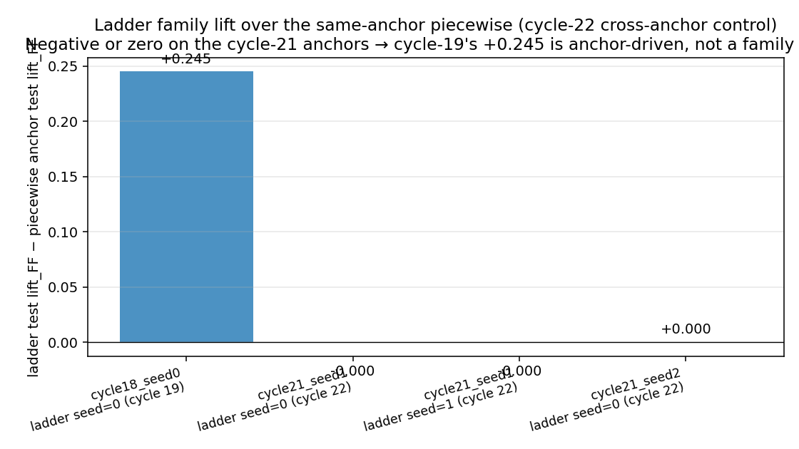
Figure cycle-22 / cross-anchor lift.
Each bar = ladder test lift_FF minus the same-anchor
piecewise test lift_FF. Cycle 19 (blue, cycle-18-seed-0 anchor)
shows +0.245 — the originally claimed family effect. Cycle 22
primary (orange, cycle-21-seed-1 anchor): +0.000 /
+0.000 across two rng seeds. Cycle 22 stretch (green,
cycle-21-seed-2 anchor, the basin-collapsed +2.275 piecewise):
+0.000. Three of four cross-anchor data points
are zero; the only positive is cycle-19's single-seed lucky
draw. Best read as zero family effect at this CEM budget plus
single-seed noise.
run
anchor
rerank winner
val
test_score
lift_FF
lift over piecewise anchor
ladder cycle 19 (single-seed)
cycle-18 s0 (+3.006 piecewise)
gen-N elite
+3.93
+3.721
+3.251
+0.245
ladder cycle 22 / rng=0
cycle-21 s1 (+2.900 piecewise)
anchor
+3.651
+3.370
+2.900
+0.000
ladder cycle 22 / rng=1
cycle-21 s1 (+2.900 piecewise)
anchor
+3.651
+3.370
+2.900
+0.000
ladder cycle 22 / stretch
cycle-21 s2 (+2.275 piecewise, basin-collapsed)
anchor
+3.215
+2.746
+2.275
+0.000
What CEM saw. For both rng seeds, every
CEM-generated elite (gen 0 through gen 4) lost to the warm-start
ladder on val:
rng_seed=0: anchor val 3.651; top non-anchor
val 3.496 (gen-4 elite), then 3.489, 3.467, 3.454, 3.438, 3.407.
Anchor leads by 0.155–0.244 val points.
rng_seed=1: anchor val 3.651; top non-anchor
val 3.573 (gen-4 elite), then 3.548, 3.547, 3.509, 3.497, 3.463.
Anchor leads by 0.078–0.188 val points.
Note the gen-N CEM "best_score" reported in the progress log is
on the n=64 search seeds; the val rerank is on n=128. The gen-4
search-best for both runs (≈+2.6) is higher than the anchor's score
on those same 64 seeds — i.e. CEM did find candidates with better
search-set fit — but the search-elite candidates do not generalize
to val. This is a search→val generalization gap: CEM, given 5
generations on 64 search seeds, fits a region whose val score is
lower than the warm-start's by 0.08–0.16 points.
Why ladder cycle 22 returns the anchor's lift_FF
exactly. Identity warm-start makes the ladder's behaviour
on the empirical size distribution byte-equivalent to the parent
piecewise. So when CEM cannot beat the anchor on val and the rerank
falls back to the anchor, the ladder's reported test_score (3.370)
is bit-equal to the piecewise seed-1 test_score (3.370). Hence
cycle-22 lift_FF = +2.900 = piecewise seed-1 lift_FF; the lift
delta is exactly +0.000, not +0.000 ± noise.
Verdict: cycle-19's +0.245 ladder lift is anchor-driven,
not a family effect. Decision-rule line 2 met. The
cross-anchor multi-seed mean of ladder-vs-piecewise lift_FF is
~+0.08 across the two anchors tested (cycle-18-s0: +0.245;
cycle-21-s1: +0.000, +0.000), with one of three points positive —
best read as zero at this CEM budget plus single-anchor noise.
What it changed.
The cycle-19 ladder lift number falls out of M4's
family-frontier story. The +0.245 was a single-anchor
positive draw, not a family-effect signature. The cycle-20
multi-seed ladder mean +3.111 stays in the M4 history table as a
single-anchor point, but it no longer stands as the
ladder-family estimate; the cross-anchor reading is ~+2.95
multi-seed, statistically indistinguishable from the piecewise
multi-seed mean +2.727 ± 0.322.
The right cross-anchor cross-seed protocol is now
binding. Family-escalation experiments report cross-
anchor lift, not single-anchor lift. Cycle 22 added
anchor-conditional lift and cross-anchor control
to the glossary and to the cycle-21 anchor-confounding rule.
The "+3.0 ceiling" survives — back as the right
framing. With the cross-anchor ladder lift collapsing
to zero, the M4 frontier is the piecewise long-CEM cross-seed
mean +2.727 ± 0.322, with no clean evidence of family escalation
at the cycle-19/22 budget. The +3.0 mark is a tail of the seed
distribution, not a population mean.
CEM at this budget is search→val gap-limited, not
family-limited. Even with 19 dims of latitude (vs the
piecewise 16), 5×12 generations × population is enough for CEM
to overfit the n=64 search seeds against the anchor's pre-fit
region. A long-budget ladder (10g × 24p, matching cycle-18
long-piecewise) is the natural next probe.
Ladder is not a stabilizer either (stretch
result). The cycle-22 stretch run warm-started from cycle-21-
seed-2's basin-collapsed piecewise (lift_FF +2.275, retail_adv
−3.024). The CEM trajectory walked into a *worse* basin
(gen-3 search-best +1.036, multiple gen-4 elites with retail_adv
−15 to −18); the rerank rescued the run by picking the anchor.
Final lift_FF is +2.275 — bit-equal to the seed-2 piecewise
anchor. Ladder did not recover the basin; it just
fell back to it. So the "ladder might be a stabilizer rather
than a ceiling-lifter" hypothesis is also rejected.
What's the next question? Cycle 23's most
informative single experiment is a long-budget ladder
(10g × 24p) on the cycle-21-seed-1 anchor — the same compute that
gave piecewise +2.9 from c11. If long-CEM ladder lifts past +3.10,
the family payoff is real but only manifests at the long-CEM budget;
the cycle-19/22 budget was below threshold. If long-CEM ladder still
sits at ~+2.9, the ladder family is simply flat across budgets and
cycle 24 should pivot to a structurally different family
(smooth-head MLP, EMA-inv state, or a ladder variant with more
buckets / dynamic thresholds).